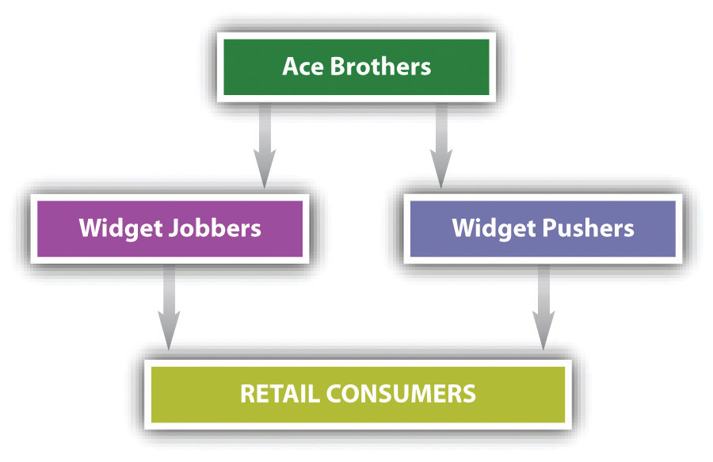
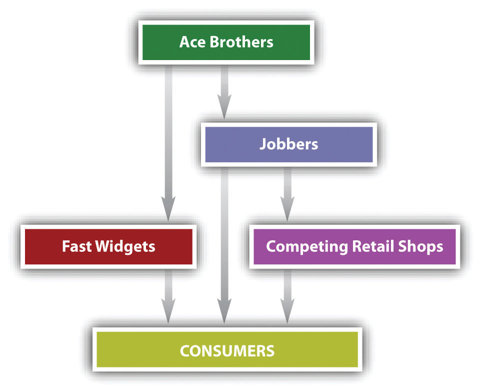

After reading this chapter, you should understand the following:
This chapter will describe the history and current status of federal laws to safeguard the US market from anticompetitive practices, especially those of very large companies that may have a monopolyA company has a monopoly where it has a large enough percentage of a given market segment to exercise monopoly power in a manner that would adversely affect competition.. Companies that have a monopoly in any market segment have the potential to exercise monopoly powerThe ability of a monopoly to dictate prices and other characteristics in a given market segment. in ways that are harmful to consumers and competitors. Economic theory assures us that for the most part, competition is good: that sound markets will offer buyers lots of choices and good information about products and services being sold and will present few barriers to entry for buyers and sellers. By encouraging more, rather than fewer, competitors in a given segment of the market, US antitrust law attempts to preserve consumer choice and to limit barriers to entry, yet it does allow some businesses to achieve considerable size and market share on the belief that size can create efficiencies and pass along the benefits to consumers.
In this chapter, we take up the origins of the federal antitrust laws and the basic rules governing restraints of trade.Sherman Act, Section 1; Clayton Act, Section 3. We also look at concentrations of market power: monopoly and acquisitions and mergers.Sherman Act, Section 2; Clayton Act, Section 7. In Chapter 27 "Unfair Trade Practices and the Federal Trade Commission", we explore the law of deceptive acts and unfair trade practices, both as administered by the Federal Trade Commission (FTC) and as regulated at common law.
Figure 26.1 An Antitrust Schematic

The antitrust laws are aimed at maintaining competition as the driving force of the US economy. The very word antitrust implies opposition to the giant trusts that began to develop after the Civil War. Until then, the economy was largely local; manufacturers, distributors, and retailers were generally small. The Civil War demonstrated the utility of large-scale enterprise in meeting the military’s ferocious production demands, and business owners were quick to understand the advantage of size in attracting capital. For the first time, immense fortunes could be made in industry, and adventurous entrepreneurs were quick to do so in an age that lauded the acquisitive spirit.
The first great business combinations were the railroads. To avoid ruinous price wars, railroad owners made private agreements, known as “pools,” through which they divided markets and offered discounts to favored shippers who agreed to ship goods on certain lines. The pools discriminated against particular shippers and certain geographic regions, and public resentment grew.
Farmers felt the effects first and hardest, and they organized politically to express their opposition. In time, they persuaded many state legislatures to pass laws regulating railroads. In Munn v. Illinois, the Supreme Court rejected a constitutional attack on a state law regulating the transportation and warehousing of grain; the court declared that the “police powers” of the states permit the regulation of property put to public uses.Munn v. Illinois, 94 U.S. 113 (1877). But over time, many state railroad laws were struck down because they interfered with interstate commerce, which only Congress may regulate constitutionally. The consequence was federal legislation: the Interstate Commerce Act of 1887, establishing the first federal administrative agency, the Interstate Commerce Commission.
In the meantime, the railroads had discovered that their pools lacked enforcement power. Those who nominally agreed to be bound by the pooling arrangement could and often did cheat. The corporate form of business enterprise allowed for potentially immense accumulations of capital to be under the control of a small number of managers; but in the 1870s and 1880s, the corporation was not yet established as the dominant legal form of operation. To overcome these disadvantages, clever lawyers for John D. Rockefeller organized his Standard Oil of Ohio as a common-law trust. Trustees were given corporate stock certificates of various companies; by combining numerous corporations into the trust, the trustees could effectively manage and control an entire industry. Within a decade, the Cotton Trust, Lead Trust, Sugar Trust, and Whiskey Trust, along with oil, telephone, steel, and tobacco trusts, had become, or were in the process of becoming, monopolies.
Consumers howled in protest. The political parties got the message: In 1888, both Republicans and Democrats put an antitrust plank in their platforms. In 1889, the new president, Republican Benjamin Harrison, condemned monopolies as “dangerous conspiracies” and called for legislation to remedy the tendency of monopolies that would “crush out” competition.
The result was the Sherman Antitrust Act of 1890, sponsored by Senator John Sherman of Ohio. Its two key sections forbade combinations in restraint of trade and monopolizing. Senator Sherman and other sponsors declared that the act had roots in a common-law policy that frowned on monopolies. To an extent, it did, but it added something quite important for the future of business and the US economy: the power of the federal government to enforce a national policy against monopoly and restraints of trade. Nevertheless, passage of the Sherman Act did not end the public clamor, because fifteen years passed before a national administration began to enforce the act, when President Theodore Roosevelt—”the Trustbuster”—sent his attorney general after the Northern Securities Corporation, a transportation holding company.
During its seven years, the Roosevelt administration initiated fifty-four antitrust suits. The pace picked up under the Taft administration, which in only four years filed ninety antitrust suits. But the pressure for further reform did not abate, especially when the Supreme Court, in the Standard Oil case of 1911,Standard Oil Co. of New Jersey v. United States, 221 U.S. 1 (1911). declared that the Sherman Act forbids only “unreasonable” restraints of trade. A congressional investigation of US Steel Corporation brought to light several practices that had gone unrestrained by the Sherman Act. It also sparked an important debate, one that has echoes in our own time, about the nature of national economic policy: should it enforce competition or regulate business in a partnership kind of arrangement?
Big business was firmly on the side of regulation, but Congress opted for the policy followed waveringly to the present: competition enforced by government, not a partnership of government and industry, must be the engine of the economy. Accordingly, in 1914, at the urging of President Woodrow Wilson, Congress enacted two more antitrust laws, the Clayton Act and the Federal Trade Commission Act. The Clayton Act outlawed price discrimination, exclusive dealing and tying contracts, acquisition of a company’s competitors, and interlocking directorates. The FTC Act outlawed “unfair methods” of competition, established the FTC as an independent administrative agency, and gave it power to enforce the antitrust laws alongside the Department of Justice.
The Sherman, Clayton, and FTC Acts remain the basic texts of antitrust law. Over the years, many states have enacted antitrust laws as well; these laws govern intrastate competition and are largely modeled on the federal laws. The various state antitrust laws are beyond the scope of this textbook.
Two additional federal statutes were adopted during the next third of a century as amendments to the Clayton Act. Enacted in the midst of the Depression in 1936, the Robinson-Patman Act prohibits various forms of price discrimination. The Celler-Kefauver Act, strengthening the Clayton Act’s prohibition against the acquisition of competing companies, was enacted in 1950 in the hopes of stemming what seemed to be a tide of corporate mergers and acquisitions. We will examine these laws in turn.
Section 1 of the Sherman Act declares, “Every contract, combination in the form of trust or otherwise, or conspiracy, in restraint of trade or commerce among the several states, or with foreign nations, is declared to be illegal.” This is sweeping language. What it embraces seems to depend entirely on the meaning of the words “restraint of trade or commerce.” Whatever they might mean, every such restraint is declared unlawful. But in fact, as we will see, the proposition cannot be stated quite so categorically, for in 1911 the Supreme Court limited the reach of this section to unreasonable restraints of trade.
What does “restraint of trade” mean? The Sherman Act’s drafters based the act on a common-law policy against monopolies and other infringements on competition. But common law regarding restraints of trade had been developed in only rudimentary form, and the words have come to mean whatever the courts say they mean. In short, the antitrust laws, and the Sherman Act in particular, authorize the courts to create a federal “common law” of competition.
Section 2 of the Sherman Act prohibits monopolization: “Every person who shall monopolize, or attempt to monopolize, or combine or conspire with any other person or persons, to monopolize any part of the trade or commerce among the several states, or with foreign nations, shall be deemed guilty of a misdemeanor.” In 1976, Congress upped the ante: violations of the Sherman Act are now felonies. Unlike Section 1, Section 2 does not require a combination between two or more people. A single company acting on its own can be guilty of monopolizing or attempting to monopolize.
The Clayton Act was enacted in 1914 to plug what many in Congress saw as loopholes in the Sherman Act. Passage of the Clayton Act was closely linked to that of the FTC Act. Unlike the Sherman Act, the Clayton Act is not a criminal statute; it merely declares certain defined practices as unlawful and leaves it to the government or to private litigants to seek to enjoin those practices. But unlike the FTC Act, the Clayton Act does spell out four undesirable practices. Violations of the Sherman Act require an actual adverse impact on competition, whereas violations of the Clayton Act require merely a probable adverse impact. Thus the enforcement of the Clayton Act involves a prediction that the defendant must rebut in order to avoid an adverse judgment.
The four types of proscribed behavior are these:
Like the Clayton Act, the FTC Act is a civil statute, involving no criminal penalties. Unlike the Clayton Act, its prohibitions are broadly worded. Its centerpiece is Section 5, which forbids “unfair methods of competition in commerce, and unfair or deceptive acts or practices in commerce.” We examine Section 5 in Chapter 27 "Unfair Trade Practices and the Federal Trade Commission".
There are four different means of enforcing the antitrust laws.
First, the US Department of Justice may bring civil actions to enjoin violations of any section of the Sherman and Clayton Acts and may institute criminal prosecutions for violations of the Sherman Act. Both civil and criminal actions are filed by the offices of the US attorney in the appropriate federal district, under the direction of the US attorney general. In practice, the Justice Department’s guidance comes through its Antitrust Division in Washington, headed by an assistant attorney general. With several hundred lawyers and dozens of economists and other professionals, the Antitrust Division annually files fewer than one hundred civil and criminal actions combined. On average, far more criminal cases are filed than civil cases. In 2006, thirty-four criminal cases and twelve civil cases were filed; in 2007, forty criminal cases and six civil cases; in 2008, fifty-four criminal cases and nineteen civil cases; and in 2009, seventy-two criminal cases and nine civil cases.
The number of cases can be less important than the complexity and size of a particular case. For example, U.S. v. American Telephone & Telegraph and U.S. v. IBM were both immensely complicated, took years to dispose of, and consumed tens of thousands of hours of staff time and tens of millions of dollars in government and defense costs.
Second, the FTC hears cases under the Administrative Procedure Act, as described in Chapter 5 "Administrative Law". The commission’s decisions may be appealed to the US courts of appeals. The FTC may also promulgate “trade regulation rules,” which define fair practices in specific industries. The agency has some five hundred lawyers in Washington and a dozen field offices, but only about half the lawyers are directly involved in antitrust enforcement. The government’s case against Microsoft was, like the cases against AT&T and IBM, a very complex case that took a large share of time and resources from both the government and Microsoft.
Third, in the Antitrust Improvements Act of 1976, Congress authorized state attorneys general to file antitrust suits in federal court for damages on behalf of their citizens; such a suit is known as a parens patriae claim. Any citizen of the state who might have been injured by the defendant’s actions may opt out of the suit and bring his or her own private action. The states have long had the authority to file antitrust suits seeking injunctive relief on behalf of their citizens.
Fourth, private individuals and companies may file suits for damages or injunctions if they have been directly injured by a violation of the Sherman or Clayton Act. Private individuals or companies may not sue under the FTC Act, no matter how unfair or deceptive the behavior complained of; only the FTC may do so. In the 1980s, more than 1,500 private antitrust suits were filed in the federal courts each year, compared with fewer than 100 suits filed by the Department of Justice. More recently, from 2006 to 2008, private antitrust suits numbered above 1,000 but dropped significantly, to 770, in 2009. The pace was even slower for the first half of 2010. Meanwhile, the Department of Justice filed 40 or fewer criminal antitrust cases from 2006 to 2008; that pace has quickened under the Obama administration (72 cases in 2009).
The Sherman and Clayton Acts apply when a company’s activities affect US commerce. This means that these laws apply to US companies that agree to fix the price of goods to be shipped abroad and to the acts of a US subsidiary of a foreign company. It also means that non–US citizens and business entities can be prosecuted for violations of antitrust laws, even if they never set foot in the United States, as long as their anticompetitive activities are aimed at the US market. For example, in November of 2010, a federal grand jury in San Francisco returned an indictment against three former executives in Taiwan. They had conspired to fix prices on color display tubes (CDTs), a type of cathode-ray tube used in computer monitors and other specialized applications.
The indictment charged Seung-Kyu “Simon” Lee, Yeong-Ug “Albert” Yang, and Jae-Sik “J. S.” Kim with conspiring with unnamed coconspirators to suppress and eliminate competition by fixing prices, reducing output, and allocating market shares of CDTs to be sold in the United States and elsewhere. Lee, Yang, and Kim allegedly participated in the conspiracy during various time periods between at least as early as January 2000 and as late as March 2006. The conspirators met in Taiwan, Korea, Malaysia, China, and elsewhere, but not in the United States. They allegedly met for the purpose of exchanging CDT sales, production, market share, and pricing information for the purpose of implementing, monitoring, and enforcing their agreements. Because the intended effects of their actions were to be felt in the United States, the US antitrust laws could apply.
Until 1976, violations of the Sherman Act were misdemeanors. The maximum fine was $50,000 for each count on which the defendant was convicted (only $5,000 until 1955), and the maximum jail sentence was one year. But in the CDT case just described, each of the three conspirators was charged with violating the Sherman Act, which carries a maximum penalty of ten years in prison and a $1 million fine for individuals. The maximum fine may be increased to twice the gain derived from the crime or twice the loss suffered by the victims if either of those amounts is greater than the statutory maximum fine of $1 million.
One provision in the Sherman Act, not much used, permits the government to seize any property in transit in either interstate or foreign commerce if it was the subject of a contract, combination, or conspiracy outlawed under Section 1.
The Justice Department may enforce violations of the Sherman and Clayton Acts by seeking injunctions in federal district court. The injunction can be a complex set of instructions, listing in some detail the practices that a defendant is to avoid and even the way in which it will be required to conduct its business thereafter. Once an injunction is issued and affirmed on appeal, or the time for appeal has passed, it confers continuing jurisdiction on the court to hear complaints by those who say the defendant is violating it. In a few instances, the injunction or a consent decree is in effect the basic “statute” by which an industry operates. A 1956 decree against American Telephone & Telegraph Company (AT&T) kept the company out of the computer business for a quarter-century, until the government’s monopoly suit against AT&T was settled and a new decree issued in 1983. The federal courts also have the power to break up a company convicted of monopolizing or to order divestitureA remedy, occasionally used, to break up a firm into smaller, independent units, where the firm has exercised its monopoly power in ways that harm competition. For example, the breakup of AT&T was a divestiture. when the violation consists of unlawful mergers and acquisitions.
The FTC may issue cease and desist orders against practices condemned under Section 5 of the FTC Act—which includes violations of the Sherman and Clayton Acts—and these orders may be appealed to the courts.
Rather than litigate a case fully, defendants may agree to consent decreesA judicial order entered into by defendants in lieu of litigating, in which they admit their guilt but agree to not carry on certain activities complained of. Failure to comply with the terms will result in fines. Similar to an injunction or a cease and desist order., in which, without admitting guilt, they agree not to carry on the activity complained of. Violations of injunctions, cease and desist orders, and consent decrees subject companies to a fine of $10,000 a day for every day the violation continues. Companies frequently enter into consent decrees—and not just because they wish to avoid the expense and trouble of trial. Section 5 of the Clayton Act says that whenever an antitrust case brought by the federal government under either the Clayton Act or the Sherman Act goes to final judgment, the judgment can be used, in a private suit in which the same facts are at issue, as prima facie evidence that the violation was committed. This is a powerful provision, because it means that a private plaintiff need prove only that the violation in fact injured him. He need not prove that the defendant committed the acts that amount to antitrust violations. Since this provision makes it relatively easy for private plaintiffs to prevail in subsequent suits, defendants in government suits have a strong inducement to enter into consent decrees, because these are not considered judgments. Likewise, a guilty plea in a criminal case gives the plaintiff in a later private civil suit prima facie evidence of the defendant’s liability. However, a plea of nolo contendere will avoid this result. Section 5 has been the spur for a considerable proportion of all private antitrust suits. For example, the government’s price-fixing case against the electric equipment industry that sent certain executives of General Electric to jail in the 1950s led to more than 2,200 private suits.
The crux of the private suit is its unique damage award: any successful plaintiff is entitled to collect three times the amount of damages actually suffered—treble damages, as they are known—and to be paid the cost of his attorneys. These fees can be huge: defendants have had to pay out millions of dollars for attorneys’ fees alone in single cases. The theory of treble damagesFor private lawsuits, successful plaintiffs may collect three times the amount of damages actually suffered. is that they will serve as an incentive to private parties to police industry for antitrust violations, thus saving the federal government the immense expense of maintaining an adequate staff for that job.
One of the most important developments in antitrust law during the 1970s was the rise of the class action. Under liberalized rules of federal procedure, a single plaintiff may sue on behalf of the entire class of people injured by an antitrust violation. This device makes it possible to bring numerous suits that would otherwise never have been contemplated. A single individual who has paid one dollar more than he would have been charged in a competitive market obviously will not file suit. But if there are ten million consumers like him, then in a class action he may seek—on behalf of the entire class, of course—$30 million ($10 million trebled), plus attorneys’ fees. Critics charge that the class action is a device that in the antitrust field benefits only the lawyers, who have a large incentive to find a few plaintiffs willing to have their names used in a suit run entirely by the lawyers. Nevertheless, it is true that the class action permits antitrust violations to be rooted out that could not otherwise be attacked privately. During the 1970s, suits against drug companies and the wallboard manufacturing industry were among the many large-scale antitrust class actions.
The antitrust laws, and especially Section 1 of the Sherman Act, are exceedingly vague. As Chief Justice Charles Evans Hughes once put it, “The Sherman Act, as a charter of freedom, has a generality and adaptability comparable to that found to be desirable in constitutional provisions.”Appalachian Coals v. United States, 288 U.S. 344, 359 (1933). Without the sweeping but vague language, the antitrust laws might quickly have become outdated. As written, they permit courts to adapt the law to changing circumstances. But the vagueness can lead to uncertainty and uneven applications of the law.
Section 1 of the Sherman Act says that “every” restraint of trade is illegal. But is a literal interpretation really possible? No, for as Justice Louis Brandeis noted in 1918 in one of the early price-fixing cases, “Every agreement concerning trade, every regulation of trade restrains. To bind, to restrain, is of their very essence.”Chicago Board of Trade v. United States, 246 U.S. 231 (1918). When a manufacturing company contracts to buy raw materials, trade in those goods is restrained: no one else will have access to them. But to interpret the Sherman Act to include such a contract is an absurdity. Common sense says that “every” cannot really mean every restraint.
Throughout this century, the courts have been occupied with this question. With the hindsight of thousands of cases, the broad outlines of the answer can be confidently stated. Beginning with Standard Oil Co. of New Jersey v. United States, the Supreme Court has held that only unreasonable restraints of trade are unlawful.Standard Oil Co. of New Jersey v. United States, 221 U.S. 1 (1911).
Often called the rule of reasonA judicial test balancing the positive effects of an agreement against its potentially anticompetitive effects., the interpretation of Section 1 made in Standard Oil itself has two possible meanings, and they have been confused over the years. The rule of reason could mean that a restraint is permissible only if it is ancillary to a legitimate business purpose. The standard example is a covenant not to compete. Suppose you decide to purchase a well-regarded bookstore in town. The proprietor is well liked and has developed loyal patrons. He says he is going to retire in another state. You realize that if he changed his mind and stayed in town to open another bookstore, your new business would suffer considerably. So you negotiate as a condition of sale that he agrees not to open another bookstore within ten miles of the town for the next three years. Since your intent is not to prevent him from going into business—as it would be if he had agreed never to open a bookstore anywhere—but merely to protect the value of your purchase, this restraint of trade is ancillary to your business purpose. The rule of reason holds that this is not an unlawful restraint of trade.
Another interpretation of the rule of reason is even broader. It holds that agreements that might directly impair competition are not unlawful unless the particular impairment itself is unreasonable. For example, several retailers of computer software are distraught at a burgeoning price war that will possibly reduce prices so low that they will not be able to offer their customers proper service. To avert this “cutthroat competition,” the retailers agree to set a price floor—a floor that, under the circumstances, is reasonable. Chief Justice Edward White, who wrote the Standard Oil opinion, might have found that such an agreement was reasonable because, in view of its purposes, it was not unduly restrictive and did not unduly restrain trade.
But this latter view is not the law. Almost any business agreement could enhance the market power of one or more parties to the agreement, and thus restrain trade. “The true test of legality,” Justice Brandeis wrote in 1918 in Chicago Board of Trade, “is whether the restraint imposed is such as merely regulates and perhaps thereby promotes competition or whether it is such as may suppress or even destroy competition.”Chicago Board of Trade v. United States, 246 U.S. 231 (1918). Section 1 violations analyzed under the rule of reason will look at several factors, including the purpose of the agreement, the parties’ power to implement the agreement to achieve that purpose, and the effect or potential effect of the agreement on competition. If the parties could have used less restrictive means to achieve their purpose, the Court would more likely have seen the agreement as unreasonable.Chicago Board of Trade v. United States, 246 U.S. 231 (1918).
Not every act or commercial practice needs to be weighed by the rule of reason. Some acts have come to be regarded as intrinsically or necessarily impairing competition, so that no further analysis need be made if the plaintiff can prove that the defendant carried them out or attempted or conspired to do so. Price-fixing is an example. Price-fixing is said to be per se illegalUnlawful on its face. Applies to acts that by their very nature are regarded as impairing competition. For example, price-fixing is said to be per se illegal under the Sherman Act. under the Sherman Act—that is, unlawful on its face. The question in a case alleging price-fixingAgreements, usually among competitors, that directly set prices, exchange price information, control output, or regulate competitive benefits. is not whether the price was reasonable or whether it impaired or enhanced competition, but whether the price in fact was fixed by two sellers in a market segment. Only that question can be at issue.
The rule of reason and the per se rules apply to the Sherman Act. The Clayton Act has a different standard. It speaks in terms of acts that may tend substantially to lessen competition. The courts must construe these terms too, and in the sections that follow, we will see how they have done so.
The preservation of competition is an important part of public policy in the United States. The various antitrust laws were crafted in response to clear abuses by companies that sought to claim easier profits by avoiding competition through the exercise of monopoly power, price-fixing, or territorial agreements. The Department of Justice and the Federal Trade Commission have substantial criminal and civil penalties to wield in their enforcement of the various antitrust laws.
Classification of antitrust cases and principles is not self-evident because so many cases turn on complex factual circumstances. One convenient way to group the cases is to look to the relationship of those who have agreed or conspired. If the parties are competitors—whether competing manufacturers, wholesalers, retailers, or others—there could be a horizontal restraint of tradeAn agreement that in some way restrains competition between rival firms competing in the same market.. If the parties are at different levels of the distribution chain—for example, manufacturer and retailer—their agreement is said to involve a vertical restraint of tradeAny restraint on trade created by agreements between firms at different levels in the manufacturing and distribution process.. These categories are not airtight: a retailer might get competing manufacturers to agree not to supply a competitor of the retailer. This is a vertical restraint with horizontal effects.
Price-fixing agreements are per se violations of Section 1 of the Sherman Act. The per se rule was announced explicitly in United States v. Trenton Potteries.United States v. Trenton Potteries, 273 U.S. 392 (1927). In that case, twenty individuals and twenty-three corporations, makers and distributors of 82 percent of the vitreous pottery bathroom fixtures used in the United States, were found guilty of having agreed to establish and adhere to a price schedule. On appeal, they did not dispute that they had combined to fix prices. They did argue that the jury should have been permitted to decide whether what they had done was reasonable. The Supreme Court disagreed, holding that any fixing of prices is a clear violation of the Sherman Act.
Twenty-four years later, the Court underscored this categorical per se rule in Kiefer-Stewart Co. v. Joseph E. Seagram & Sons.Kiefer-Stewart Co. v. Joseph E. Seagram & Sons, 340 U.S. 211 (1951). The defendants were distillers who had agreed to sell liquor only to those wholesalers who agreed to resell it for no more than a maximum price set by the distillers. The defendants argued that setting maximum prices did not violate the Sherman Act because such prices promoted rather than restrained competition. Again, the Supreme Court disagreed: “[S]uch agreements, no less than those to fix minimum prices, cripple the freedom of traders and thereby restrain their ability to sell in accordance with their own judgment.”
The per se prohibition against price-fixing is not limited to agreements that directly fix prices. Hundreds of schemes that have the effect of controlling prices have been tested in court and found wanting, some because they were per se restraints of trade, others because their effects were unreasonable—that is, because they impaired competition—under the circumstances. In the following sections, we examine some of these cases briefly.
Knowledge of competitors’ prices can be an effective means of controlling prices throughout an industry. Members of a trade association of hardwood manufacturers adopted a voluntary “open competition” plan. About 90 percent of the members adhered to the plan. They accounted for one-third of the production of hardwood in the United States. Under the plan, members reported daily on sales and deliveries and monthly on production, inventory, and prices. The association, in turn, sent out price, sales, and production reports to the participating members. Additionally, members met from time to time to discuss these matters, and they were exhorted to refrain from excessive production in order to keep prices at profitable levels. In American Column and Lumber Company v. United States, the Supreme Court condemned this plan as a per se violation of Section 1 of the Sherman Act.American Column and Lumber Company v. United States, 257 U.S. 377 (1921).
Not every exchange of information is necessarily a violation, however. A few years after American Column and Lumber, in Maple Flooring Manufacturers’ Association v. United States, the Court refused to find a violation in the practice of an association of twenty-two hardwood-floor manufacturers in circulating a list to all members of average costs and freight rates, as well as summaries of sales, prices, and inventories.Maple Flooring Manufacturers’ Association v. United States, 268 U.S. 563 (1925). The apparent difference between American Column and Lumber and Maple Flooring was that in the latter, the members did not discuss prices at their meetings, and their rules permitted them to charge individually whatever they wished. It is not unlawful, therefore, for members of an industry to meet to discuss common problems or to develop statistical information about the industry through a common association, as long as the discussions do not border on price or on techniques of controlling prices, such as by restricting output. Usually, it takes evidence of collusion to condemn the exchange of prices or other data.
Competitors also fix prices by controlling an industry’s output. For example, competitors could agree to limit the amount of goods each company makes or by otherwise limiting the amount that comes to market. This latter technique was condemned in United States v. Socony-Vacuum Oil Co.United States v. Socony-Vacuum Oil Co., 310 U.S. 150 (1940). To prevent oil prices from dropping, dominant oil companies agreed to and did purchase from independent refiners surplus gasoline that the market was forcing them to sell at distress prices. By buying up this gasoline, the large companies created a price floor for their own product. This conduct, said the Court, is a per se violation.
Many companies may wish to eliminate certain business practices—for example, offering discounts or premiums such as trading stamps on purchase of goods—but are afraid or powerless to do so unless their competitors also stop. The temptation is strong to agree with one’s competitors to jointly end these practices; in most instances, doing so is unlawful when the result would be to affect the price at which the product is sold. But not every agreed-on restraint or standard is necessarily unlawful. Companies might decide that it would serve their customers’ interests as well as their own if the product could be standardized, so that certain names or marks signify a grade or quality of product. When no restriction is placed on what grades are to be sold or at what prices, no restraint of trade has occurred.
In National Society of Professional Engineers v. United States, Section 26.8.1 "Horizontal Restraints of Trade", a canon of ethics of the National Society of Professional Engineers prohibited members from making competitive bids. This type of prohibition has been common in the codes of ethics of all kinds of occupational groups that claim professional status. These groups justify the ban by citing public benefits, though not necessarily price benefits, that flow from observance of the “ethical” rule.
Suppose four ice-cream manufacturers decided one day that their efforts to compete in all four corners of the city were costly and destructive. Why not simply strike a bargain: each will sell ice cream to retail shops in only one quadrant of the city. This is not a pricing arrangement; each is free to sell at whatever price it desires. But it is a restraint of trade, for in carving up the territory in which each may sell, they make it impossible for grocery stores to obtain a choice among all four manufacturers. The point becomes obvious when the same kind of agreement is put on a national scale: suppose Ford and Toyota agreed that Ford would not sell its cars in New York and Toyota would not sell Toyotas in California.
Most cases of territorial allocationHorizontal allocations of territory are per se illegal under Section 1 of the Sherman Act. But producers may wish to assign dealers an exclusive area within which to sell their products. For these vertical allocations of territory, the rule of reason is followed. are examples of vertical restraints in which manufacturers and distributors strike a bargain. But some cases deal with horizontal allocation of territories. In United States v. Sealy, the defendant company licensed manufacturers to use the Sealy trademark on beds and mattresses and restricted the territories in which the manufacturers could sell.United States v. Sealy, 388 U.S. 350 (1967). The evidence showed that the licensees, some thirty small bedding manufacturers, actually owned the licensor and were using the arrangement to allocate the territory. It was held to be unlawful per se.
We said earlier that it might be permissible for manufacturers, through a trade association, to establish certain quality standards for the convenience of the public. As long as these standards are not exclusionary and do not reflect any control over price, they might not inhibit competition. The UL mark on electrical and other equipment—a mark to show that the product conforms to specifications of the private Underwriters Laboratory—is an example. But suppose that certain widget producers establish the Scientific Safety Council, a membership association whose staff ostensibly assigns quality labels, marked SSC, to those manufacturers who meet certain engineering and safety standards. In fact, however, the manufacturers are using the widespread public acceptance of the SSC mark to keep the market to themselves by refusing to let nonmembers join and by refusing to let nonmembers use the SSC mark, even if their widgets conform to the announced standards. This subterfuge would be a violation of Section 1 of the Sherman Act.
Agreements by competitors to boycott (refuse to deal with) those who engage in undesirable practices are unlawful. In an early case, a retailers’ trade association circulated a list of wholesale distributors who sold directly to the public. The intent was to warn member retailers not to buy from those wholesalers. Although each member was free to act however it wanted, the Court saw in this blacklist a plan to promote a boycott.Eastern State Lumber Dealers’ Association v. United States, 234 U.S. 600 (1914).
This policy remains true even if the objective of the boycott is to prevent unethical or even illegal activities. Members of a garment manufacturers association agreed with a textile manufacturers association not to use any textiles that had been “pirated” from designs made by members of the textile association. The garment manufacturers also pledged, among other things, not to sell their goods to any retailer who did not refrain from using pirated designs. The argument that this was the only way to prevent unscrupulous design pirates from operating fell on deaf judicial ears; the Supreme Court held the policy unlawful under Section 5 of the Federal Trade Commission (FTC) Act, the case having been brought by the FTC.Fashion Originators’ Guild of America v. Federal Trade Commission, 312 U.S. 457 (1941).
It is vital for business managers to realize that once an agreement or a conspiracy is shown to have existed, they or their companies can be convicted of violating the law even if neither agreement nor conspiracy led to concrete results. Suppose the sales manager of Extremis Widget Company sits down over lunch with the sales manager of De Minimis Widget Company and says, “Why are we working so hard? I have a plan that will let us both relax.” He explains that their companies can put into operation a data exchange program that will stabilize prices. The other sales manager does not immediately commit himself, but after lunch, he goes to the stationery store and purchases a notebook in which to record the information he will get from a telephone test of the plan. That action is probably enough to establish a conspiracy to fix prices, and the government could file criminal charges at that point. Discussion with your competitors of prices, discounts, production quotas, rebates, bid rigging, trade-in allowances, commission rates, salaries, advertising, and the like is exceedingly dangerous. It can lead to criminal conduct and potential jail terms.
It is unnecessary to show that the public is substantially harmed by a restraint of trade as long as the plaintiff can show that the restraint injured him. In Klor’s, Inc. v. Broadway-Hale Stores, the plaintiff was a small retail appliance shop in San Francisco.Klor’s, Inc. v. Broadway-Hale Stores, 359 U.S. 207 (1959). Next door to the shop was a competing appliance store, one of a chain of stores run by Broadway-Hale. Klor’s alleged that Broadway-Hale, using its “monopolistic buying power,” persuaded ten national manufacturers and their distributors, including GE, RCA, Admiral, Zenith, and Emerson, to cease selling to Klor’s or to sell at discriminatory prices. The defendants did not dispute the allegations. Instead, they moved for summary judgment on the ground that even if true, the allegations did not give rise to a legal claim because the public could not conceivably have been injured as a result of their concerted refusal to deal. As evidence, they cited the uncontradicted fact that within blocks of Klor’s, hundreds of household appliance retailers stood ready to sell the public the very brands Klor’s was unable to stock as a result of the boycott. The district court granted the motion and dismissed Klor’s complaint. The court of appeals affirmed. But the Supreme Court reversed, saying as follows:
This combination takes from Klor’s its freedom to buy appliances in an open competitive market and drives it out of business as a dealer in the defendants’ products. It deprives the manufacturers and distributors of their freedom to sell to Klor’s.…It interferes with the natural flow of interstate commerce. It clearly has, by its “nature” and “character,” a “monopolistic tendency.” As such it is not to be tolerated merely because the victim is just one merchant whose business is so small that his destruction makes little difference to the economy. Monopoly can surely thrive by the elimination of such small businessmen, one at a time, as it can by driving them out in large groups.
We have been exploring the Sherman Act as it applies to horizontal restraints of trade—that is, restraints of trade between competitors. We now turn our attention to vertical restraints—those that are the result of agreements or conspiracies between different levels of the chain of distribution, such as manufacturer and wholesaler or wholesaler and retailer.
Competitors can engage in horizontal restraints of trade by various means of price-fixing. They can also engage in horizontal price restraints of trade by allocating territories or by joint boycotts (refusals to deal). These restraints need not be substantial in order to be actionable as a violation of US antitrust laws.
We have been exploring the Sherman Act as it applies to horizontal restraints of trade, restraints that are created between competitors. We now turn to vertical restraints—those that result from agreements between different levels of the chain of distribution, such as manufacturer and wholesaler or wholesaler and retailer.
Is it permissible for manufacturers to require distributors or retailers to sell products at a set price? Generally, the answer is no, but the strict per se rule against any kind of resale price maintenanceAn agreement between a manufacturer and a retailer in which the manufacturer specifies what the retail prices of its products must be. has been somewhat relaxed.
But why would a manufacturer want to fix the price at which the retailer sells its goods? There are several possibilities. For instance, sustained, long-term sales of many branded appliances and other goods depend on reliable servicing by the retailer. Unless the retailer can get a fair price, it will not provide good service. Anything less than good service will ultimately hurt the brand name and lead to fewer sales. Another possible argument for resale price maintenance is that unless all retailers must abide by a certain price, some goods will not be stocked at all. For instance, the argument runs, bookstores will not stock slow-selling books if they cannot be guaranteed a good price on best sellers. Stores free to discount best sellers will not have the profit margin to stock other types of books. To guarantee sales of best sellers to bookstores carrying many lines of books, it is necessary to put a floor under the price of books. Still another argument is that brand-name goods are inviting targets for loss-leader sales; if one merchant drastically discounts Extremis Widgets, other merchants may not want to carry the line, and the manufacturer may experience unwanted fluctuations in sales.
None of these reasons has completely appeased the critics of price-fixing, including the most important critics—the US federal judges. As long ago as 1910, in Dr. Miles Medical Co. v. John D. Park & Sons Co., the Supreme Court declared vertical price-fixing (what has come to be called resale price maintenance) unlawful under the Sherman Act. Dr. Miles Medical Company required wholesalers that bought its proprietary medicines to sign an agreement in which they agreed not to sell below a certain price and not to sell to retailers who did not have a “retail agency contract” with Dr. Miles. The retail agency contract similarly contained a price floor. Dr. Miles argued that since it was free to make or not make the medicines, it should be free to dictate the prices at which purchasers could sell them. The Court said that Dr. Miles’s arrangement with more than four hundred jobbers (wholesale distributors) and twenty-five thousand retailers was no different than if the wholesalers or retailers agreed among themselves to fix the price. Dr. Miles “having sold its product at prices satisfactory to itself, the public is entitled to whatever advantage may be derived from a competition in the subsequent traffic.”Dr. Miles Medical Co. v. John D. Park & Sons Co., 220 U.S. 373 (1910).
In Dr. Miles, the company’s restrictions impermissibly limited the freedom of choice of other drug distributors and retailers. Society was therefore deprived of various benefits it would have received from unrestricted distribution of the drugs. But academics and some judges argue that most vertical price restraints do not limit competition among competitors, and manufacturers retain the power to restrict output, and the power to raise prices. Arguably, vertical price restraints help to ensure economic efficiencies and maximize consumer welfare. Some of the same arguments noted in this section—such as the need to ensure good service for retail items—continue to be made in support of a rule of reason.
The Supreme Court has not accepted these arguments with regard to minimum prices but has increased the plaintiff’s burden of proof by requiring evidence of an agreement on specific price levels. Where a discounter is terminated by a manufacturer, it will probably not be told exactly why, and very few manufacturers would be leaving evidence in writing that insists on dealers agreeing to minimum prices.
Moreover, in State Oil Company v. Khan, the Supreme Court held that “vertical maximum price fixing, like the majority of commercial arrangements subject to the antitrust laws, should be evaluated under the rule of reason.”State Oil Company v. Khan, 522 U.S. 3 (1997). Vertical maximum price-fixing is not legal per se but should be analyzed under a rule of reason “to identify the situations in which it amounts to anti-competitive conduct.” The Khan case is at the end of this chapter, in Section 26.8.2 "Vertical Maximum Price Fixing and the Rule of Reason".
We move now to a nonprice vertical form of restraint. Suppose you went to the grocery store intent on purchasing a bag of potato chips to satisfy a late-night craving. Imagine your surprise—and indignation—if the store manager waved a paper in your face and said, “I’ll sell you this bag only on the condition that you sign this agreement to buy all of your potato chips in the next five years from me.” Or if he said, “I’ll sell only if you promise never to buy potato chips from my rival across the street.” This is an exclusive dealing agreementA contract—as between buyer and seller—where the parties agree only to deal with each other., and if the effect may be to lessen competition substantially, it is unlawful under Section 3 of the Clayton Act. It also may be unlawful under Section 1 of the Sherman Act and Section 5 of the Federal Trade Commission (FTC) Act. Another form of exclusive dealing, known as a tying contractA form of exclusive dealing, prohibited under Section 3 of the Clayton Act, forcing you to take an additional product in order to get the product you really want., is also prohibited under Section 3 of the Clayton Act and under the other statutes. A tying contract results when you are forced to take a certain product in order to get the product you are really after: “I’ll sell you the potato chips you crave, but only if you purchase five pounds of my Grade B liver.”
Section 3 of the Clayton Act declares it unlawful for any person engaged in commerce
to lease or make a sale or contract for sale of goods, wares, merchandise, machinery, supplies or other commodities, whether patented or unpatented, for use, consumption or resale…or fix a price charged therefore, or discount from or rebate upon, such price, on the condition…that the lessee or purchaser…shall not use or deal in the goods, wares, merchandise, machinery, supplies, or other commodities of a competitor or competitors of the lessor or seller, where the effect of such lease, sale, or contract for sale or such condition…may be to substantially lessen competition or tend to erect a monopoly in any line of commerce. (emphasis added)
Under Section 3, the potato chip example is not unlawful, for you would not have much of an effect on competition nor tend to create a monopoly if you signed with your corner grocery. But the Clayton Act has serious ramifications for a producer who might wish to require a dealer to sell only its products—such as a fast-food franchisee that can carry cooking ingredients bought only from the franchisor (Chapter 27 "Unfair Trade Practices and the Federal Trade Commission"), an appliance store that can carry only one national brand of refrigerators, or an ice-cream parlor that must buy ice-cream supplies from the supplier of its machinery.
A situation like the one in the ice-cream example came under review in International Salt Co. v. United States.International Salt Co. v. United States, 332 U.S. 392 (1947). International Salt was the largest US producer of salt for industrial uses. It held patents on two machines necessary for using salt products; one injected salt into foodstuffs during canning. It leased most of these machines to canners, and the lease required the lessees to purchase from International Salt all salt to be used in the machines. The case was decided on summary judgment; the company did not have the chance to prove the reasonableness of its conduct. The Court held that it was not entitled to. International Salt’s valid patent on the machines did not confer on it the right to restrain trade in unpatented salt. Justice Tom Clark said that doing so was a violation of both Section 1 of the Sherman Act and Section 3 of the Clayton Act:
Not only is price-fixing unreasonable, per se, but also it is unreasonable, per se, to foreclose competitors from any substantial market. The volume of business affected by these contracts cannot be said to be insignificant or insubstantial, and the tendency of the arrangement to accomplishment of monopoly seems obvious. Under the law, agreements are forbidden which “tend to create a monopoly,” and it is immaterial that the tendency is a creeping one rather than one that proceeds at full gallop; nor does the law await arrival at the goal before condemning the direction of the movement.
In a case involving the sale of newspaper advertising space (to purchase space in the morning paper, an advertiser would have to take space in the company’s afternoon paper), the government lost because it could not use the narrower standards of Section 3 and could not prove that the defendant had monopoly power over the sale of advertising space. (Another afternoon newspaper carried advertisements, and its sales did not suffer.) In the course of his opinion, Justice Clark set forth the rule for determining legality of tying arrangements under both the Clayton and Sherman Acts:
When the seller enjoys a monopolistic position in the market for the “tying” product [i.e., the product that the buyer wants] or if a substantial volume of commerce in the “tied” product [i.e., the product that the buyer does not want] is restrained, a tying arrangement violates the narrower standards expressed in section 3 of the Clayton Act because from either factor the requisite potential lessening of competition is inferred. And because for even a lawful monopolist it is “unreasonable per se to foreclose competitors from any substantial market” a tying arrangement is banned by section 1 of the Sherman Act wherever both conditions are met.Times-Picayune Publishing Co. v. United States, 345 U.S. 594 (1953).
This rule was broadened in 1958 in a Sherman Act case involving the Northern Pacific Railroad Company, which had received forty million acres of land from Congress in the late nineteenth century in return for building a rail line from the Great Lakes to the Pacific. For decades, Northern Pacific leased or sold the land on condition that the buyer or lessee use Northern Pacific to ship any crops grown on the land or goods manufactured there. To no avail, the railroad argued that unlike International Salt’s machines, the railroad’s “tying product” (its land) was not patented, and that the land users were free to ship on other lines if they could find cheaper rates. Wrote Justice Hugo Black,
[A] tying arrangement may be defined as an agreement by a party to sell one product but only on the condition that the buyer also purchases a different (or tied) product, or at least agrees that he will not purchase that product from any other supplier. Where such conditions are successfully exacted competition on the merits with respect to the tied product is inevitably curbed.…They deny competitors free access to the market for the tied product, not because the party imposing the tying requirements has a better product or a lower price but because of his power or leverage in another market. At the same time buyers are forced to forego their free choice between competing products.…They are unreasonable in and of themselves whenever a party has sufficient economic power with respect to the tying product to appreciably restrain free competition in the market for the tied product and a “not insubstantial” amount of interstate commerce is affected. In this case…the undisputed facts established beyond any genuine question that the defendant possessed substantial economic power by virtue of its extensive landholdings which it used as leverage to induce large numbers of purchasers and lessees to give it preference.Northern Pacific Railway Co. v. United States, 356 U.S. 1 (1958). (emphasis in original)
Taken together, the tying cases suggest that anyone with certain market power over a commodity or other valuable item (such as a trademark) runs a serious risk of violating the Clayton Act or Sherman Act or both if he insists that the buyer must also take some other product as part of the bargain. Microsoft learned about the perils of “tying” in a case brought by the United States, nineteen individual states, and the District of Columbia. The allegation was that Microsoft had tied together various software programs on its operating system, Microsoft Windows. Windows came prepackaged with Microsoft’s Internet Explorer (IE), its Windows Media Player, Outlook Express, and Microsoft Office. The United States claimed that Microsoft had bundled (or “tied”) IE to sales of Windows 98, making IE difficult to remove from Windows 98 by not putting it on the Remove Programs list.
The government alleged that Microsoft had designed Windows 98 to work “unpleasantly” with Netscape Navigator and that this constituted an illegal tying of Windows 98 and IE. Microsoft argued that its web browser and mail reader were just parts of the operating system, included with other personal computer operating systems, and that the integration of the products was technologically justified. The United States Court of Appeals for the District of Columbia Circuit rejected Microsoft’s claim that IE was simply one facet of its operating system, but the court held that the tie between Windows and IE should be analyzed deferentially under the rule of reason. The case settled before reaching final judicial resolution. (See United States v. Microsoft.United States v. Microsoft, 253 F.3d 34 (D.C. Cir. 2001).)
With horizontal restraints of trade, we have already seen that it is a per se violation of Section 1 of the Sherman Act for competitors to allocate customers and territory. But a vertical allocation of customers or territory is only illegal if competition to the markets as a whole is adversely affected. The key here is distinguishing intrabrand competition from interbrand competition. Suppose that Samsung electronics has relationships with ten different retailers in Gotham City. If Samsung decides to limit its contractual relationships to only six retailers, the market for consumer electronics in Gotham City is still competitive in terms of interbrand competition. Intrabrand competition, however, is now limited. It could be that consumers will pay slightly higher prices for Samsung electronics with only six different retailers selling those products in Gotham City. That is, intrabrand competition is lowered, but interbrand competition remains strong.
Notice that it is unlikely that the six remaining retailers will raise their prices substantially, since there is still strong interbrand competition. If the retailer only deals in Samsung electronics, it is unlikely to raise prices that much, given the strength of interbrand competition.
If the retailer carries Samsung and other brands, it will also not want to raise prices too much, for then its inventory of Samsung electronics will pile up, while its inventory of other electronics products will move off the shelves.
Why would Samsung want to limit its retail outlets in Gotham City at all? It may be that Samsung has decided that by firming up its dealer network, it can enhance service, offer a wider range of products at each of the remaining retailers, ensure improved technical and service support, increase a sense of commitment among the remaining retail outlets, or other good business reasons. Where the retailer deals in other electronic consumer brands as well, making sure that well-trained sales and service support is available for Samsung products can promote interbrand competition in Gotham City. Thus vertical allocation of retailers within the territory is not a per se violation of the Sherman Act. It is instead a rule of reason violation, or the law will intervene only if Samsung’s activities have an anticompetitive effect on the market as a whole. Notice here that the only likely objections to the new allocation would come from those dealers who were contractually terminated and who are then effectively restricted from selling Samsung electronics.
There are other potentially legitimate territorial restrictions, and limits on what kind of customer the retailer can sell to will prevent a dealer or distributor from selling outside a certain territory or to a certain class of customers. Samsung may reduce its outlets in Iowa from four to two, and it may also impose limits on those retail outlets from marketing beyond certain areas in and near Iowa.
Suppose that a Monsanto representative selling various kinds of fertilizers and pesticides was permitted to sell only to individual farmers and not to co-ops or retail distributors, or was limited to the state of Iowa. The Supreme Court has held that such vertical territorial or customer searches are not per se violations of Section 1 of the Sherman Act, as the situations often increase “interbrand competition.” Thus the rule of reason will apply to vertical allocation of customers and territory.
Often, a distributor or retailer agrees with the manufacturer or supplier not to carry the products of any other supplier. This is not in itself (per se) illegal under Section 1 of the Sherman Act or Section 3 of the Clayton Act. Only if these exclusive dealing contracts have an anticompetitive effect will there be an antitrust violation. Ideally, in a competitive market, there are no significant barriers to entry. In the real world, however, various deals are made that can and do restrict entry. Suppose that on his farm in Greeley, Colorado, Richard Tucker keeps goats, and he creates a fine, handcrafted goat cheese for the markets in Denver, Fort Collins, and Boulder, Colorado, and Cheyenne, Wyoming. In these markets, if Safeway, Whole Foods, Albertsons, and King Soopers already have suppliers, and the suppliers have gained exclusive dealing agreements, Tucker will be effectively barred from the market.
Suppose that Billy Goat Cheese is a nationally distributed brand of goat cheese and has created exclusive dealing arrangements with the four food chains in the four cities. Tucker could sue Billy Goat for violating antitrust laws if he finds out about the arrangements. But the courts will not assume a per se violation has taken place. Instead, the courts will look at the number of other distributors available, the portion of the market foreclosed by the exclusive dealing arrangements, the ease with which new distributors could enter the market, the possibility that Tucker could distribute the product himself, and legitimate business reasons that led the distributors to accept exclusive dealing contracts from Billy Goat Cheese.
Vertical restraints of trade can be related to price, can be in the form of tying arrangements, and can be in the form of allocating customers and territories. Vertical restraints can also come in the form of exclusive dealing agreements.
If the relatively simple and straightforward language of the Sherman Act can provide litigants and courts with interpretive headaches, the law against price discrimination—the Robinson-Patman Act—can strike the student with a crippling migraine. Technically, Section 2 of the Clayton Act, the Robinson-Patman Act, has been verbally abused almost since its enactment in 1936. It has been called the “Typhoid Mary of Antitrust,” a “grotesque manifestation of the scissors and paste-pot method” of draftsmanship. Critics carp at more than its language; many have asserted over the years that the act is anticompetitive because it prevents many firms from lowering their prices to attract more customers.
Despite this rhetoric, the Robinson-Patman Act has withstood numerous attempts to modify or repeal it, and it can come into play in many everyday situations. Although in recent years the Justice Department has declined to enforce it, leaving government enforcement efforts to the Federal Trade Commission (FTC), private plaintiffs are actively seeking treble damages in numerous cases. So whether it makes economic sense or not, the act is a living reality for marketers. This section introduces certain problems that lurk in deciding how to price goods and how to respond to competitors’ prices.
The Clayton Act’s original Section 2, enacted in 1914, was aimed at the price-cutting practice of the large trusts, which would reduce the price of products below cost where necessary in a particular location to wipe out smaller competitors who could not long sustain such losses. But the original Clayton Act exempted from its terms any “discrimination in price…on account of differences in the quantity of the commodity sold.” This was a gaping loophole that made it exceedingly difficult to prove a case of price discrimination.
Not until the Depression in the 1930s did sufficient cries of alarm over price discrimination force Congress to act. The alarm was centered on the practices of large grocery chains. Their immense buying power was used as a lever to pry out price discounts from food processors and wholesalers. Unable to extract similar price concessions, the small mom-and-pop grocery stores found that they could not offer the retail customer the lower food prices set by the chains. The small shops began to fail. In 1936, Congress strengthened Section 2 by enacting the Robinson-Patman Act. Although prompted by concern about how large buyers could use their purchasing power, the act in fact places most of its restrictions on the pricing decisions of sellers.
The heart of the act is Section 2(a), which reads in pertinent part as follows: “[I]t shall be unlawful for any person engaged in commerce…to discriminate in price between different purchasers of commodities of like grade and quality…where the effect of such discrimination may be substantially to lessen competition or tend to create a monopoly in any line of commerce, or to injure, destroy or prevent competition with any person who either grants or knowingly receives the benefit of such discrimination, or with customers of either of them.”
This section provides certain defenses to a charge of price discrimination. For example, differentials in price are permissible whenever they “make only due allowances for differences in the cost of manufacture, sale, or delivery resulting from the differing methods or quantities in which such commodities are to such purchasers sold or delivered.” This section also permits sellers to change prices in response to changing marketing conditions or the marketability of the goods—for example, if perishable goods begin to deteriorate, the seller may drop the price in order to move the goods quickly.
Section 2(b) provides the major defense to price discrimination: any price is lawful if made in good faith to meet competition.
To be discriminatory, the different prices must have been charged in sales made at the same time or reasonably close in time. What constitutes a reasonably close time depends on the industry and the circumstances of the marketplace. The time span for dairy sales would be considerably shorter than that for sales of mainframe computers, given the nature of the product, the frequency of sales, the unit cost, and the volatility of the markets.
Another preliminary issue is the identity of the actual purchaser. A supplier who deals through a dummy wholesaler might be charged with price discrimination even though on paper only one sale appears to have been made. Under the “indirect purchaser” doctrine, a seller who deals with two or more retail customers but passes their orders on to a single wholesaler and sells the total quantity to the wholesaler in one transaction, can be held to have violated the act. The retailers are treated as indirect purchasers of the supplier.
The act applies only to sales of commodities. A lease, a rental, or a license to use a product does not constitute a sale; hence price differentials under one of those arrangements cannot be unlawful under Robinson-Patman. Likewise, since the act applies only to commodities—tangible things—the courts have held that it does not apply to the sale of intangibles, such as rights to license or use patents, shares in a mutual fund, newspaper or television advertising, or title insurance.
Only those sales involving goods of “like grade and quality” can be tested under the act for discriminatory pricing. What do these terms mean? The leading case is FTC v. Borden Co., in which the Supreme Court ruled that trademarks and labels do not, for Robinson-Patman purposes, distinguish products that are otherwise the same.FTC v. Borden Co., 383 U.S. 637 (1966). Grade and quality must be determined “by the characteristics of the product itself.” When the products are physically or chemically identical, they are of like grade and quality, regardless of how imaginative marketing executives attempt to distinguish them. But physical differences that affect marketability can serve to denote products as being of different grade and quality, even if the differences are slight and do not affect the seller’s cost in manufacturing or marketing.
To violate the Robinson-Patman Act, the seller’s price discrimination must have an anticompetitive effect. The usual Clayton Act standard for measuring injury applies to Robinson-Patman violations—that is, a violation occurs when the effect may be substantially to lessen competition or tend to create a monopoly in any line of commerce. But because the Robinson-Patman Act has a more specific test of competitive injury, the general standard is rarely cited.
The more specific test measures the impact on particular persons affected. Section 2(a) says that it is unlawful to discriminate in price where the effect is “to injure, destroy, or prevent competition with any person who grants or knowingly receives the benefit of such discrimination or to customers of either of them.” The effect—injury, destruction, or prevention of competition—is measured against three types of those suffering it: (1) competitors of the seller or supplier (i.e., competitors of the person who “grants” the price discrimination), (2) competitors of the buyer (i.e., competitors of the buyer who “knowingly receives the benefit” of the price differential), and (3) customers of either of the two types of competitors. As we will see, the third category presents many difficulties.
For purposes of our discussion, assume the following scenario: Ace Brothers Widget Company manufactures the usual sizes and styles of American domestic widgets. It competes primarily with National Widget Corporation, although several smaller companies make widgets in various parts of the country. Ace Brothers is the largest manufacturer and sells throughout the United States. National sells primarily in the western states. The industry has several forms of distribution. Many retailers buy directly from Ace and National, but several regional and national wholesalers also operate, including Widget Jobbers, Ltd. and Widget Pushers, LLC. The retailers in any particular city compete directly against each other to sell to the general public. Jobbers and Pushers are in direct competition. Jobbers also sells directly to the public, so that it is in direct competition with retailers as well as Widget Pushers. As everyone knows, widgets are extremely price sensitive, being virtually identical in physical appearance and form.
Now consider the situation in California, Oregon, and Wisconsin. The competing manufacturers, Ace Brothers and National Widgets, both sell to wholesalers in California and Oregon, but only Ace has a sales arm in Wisconsin. Seeing an opportunity, Ace drops its prices to wholesalers in California and Oregon and raises them in Wisconsin, putting National at a competitive disadvantage. This situation, illustrated in Figure 26.2 "Primary-Line Injury", is an example of primary-line injuryPrice discrimination under the Robinson-Patman Act that directly injures a competitor, in violation of Section 2(a).—the injury is done directly to a competitor of the company that differentiates its prices. This is price discrimination, and it is prohibited under Section 2(a).
Figure 26.2 Primary-Line Injury

Most forms of primary-line injury have a geographical basis, but they need not. Suppose National sells exclusively to Jobbers in northern California, and Ace Brothers sells both to Jobbers and several other wholesalers. If Ace cuts its prices to Jobbers while charging higher prices to the other wholesalers, the effect is also primary-line injury to National. Jobbers will obviously want to buy more from Ace at lower prices, and National’s reduced business is therefore a direct injury. If Ace intends to drive National out of business, this violation of Section 2(a) could also be an attempt to monopolize in violation of Section 2 of the Sherman Act.
Next, we consider injury done to competing buyers. Suppose that Ace Brothers favors Jobbers—or that Jobbers, a powerful and giant wholesaler, induces Ace to act favorably by threatening not to carry Ace’s line of widgets otherwise. Although Ace continues to supply both Jobbers and Widget Pushers, it cuts its prices to Jobbers. As a result, Jobbers can charge its retail customers lower prices than can Pushers, so that Pushers’s business begins to slack off. This is secondary-line injuryPrice discrimination under the Robinson-Patman act that injures a competitor of a buyer, in violation of Section 2(a). at the buyer’s level. Jobbers and Pushers are in direct competition, and by impairing Pushers’s ability to compete, the requisite injury has been committed. This situation is illustrated in Figure 26.3 "Secondary-Line Injury".
Figure 26.3 Secondary-Line Injury
Variations on this secondary-line injury are possible. Assume Ace Brothers sells directly to Fast Widgets, a retail shop, and also to Jobbers. Jobbers sells to retail shops that compete with Fast Widgets and also directly to consumers. The situation is illustrated in Figure 26.4 "Variation on Secondary-Line Injury").
Figure 26.4 Variation on Secondary-Line Injury
If Ace favors Jobbers by cutting its prices, discriminating against Fast Widgets, the transaction is unlawful, even though Jobbers and Fast Widgets do not compete for sales to other retailers. Their competition for the business of ultimate consumers is sufficient to establish the illegality of the discrimination. A variation on this situation was at issue in the first important case to test Section 2(a) as it affects buyers. Morton Salt sold to both wholesalers and retailers, offering quantity discounts. Its pricing policy was structured to give large buyers great savings, computed on a yearly total, not on shipments made at any one time. Only five retail chains could take advantage of the higher discounts, and as a result, these chains could sell salt to grocery shoppers at a price below that at which the chains’ retail competitors could buy it from their wholesalers. See Figure 26.5 "Variation: Morton Salt Co." for a schematic illustration. In this case, FTC v. Morton Salt Co., the Supreme Court for the first time declared that the impact of the discrimination does not have to be actual; it is enough if there is a “reasonable possibility” of competitive injury.FTC v. Morton Salt Co., 334 U.S. 37 (1948).
Figure 26.5 Variation: Morton Salt Co.

In order to make out a case of secondary-line injury, it is necessary to show that the buyers purchasing at different prices are in fact competitors. Suppose that Ace Brothers sells to Fast Widgets, the retailer, and also to Boron Enterprises, a manufacturer that incorporates widgets in most of its products. Boron does not compete against Fast Widgets, and therefore Ace Brothers may charge different prices to Boron and Fast without fearing Robinson-Patman repercussions. Figure 26.6 "Variation: Boron-Fast Schematic" shows the Boron-Fast schematic.
Figure 26.6 Variation: Boron-Fast Schematic

Second-line injury to buyers does not exhaust the possibilities. Robinson-Patman also works against so-called third-line or tertiary-line injury. At stake here is injury another rung down the chain of distribution. Ace Brothers sells to Pushers, which processes unfinished widgets in its own factory and sells them in turn directly to retail customers. Ace also sells to Jobbers, a wholesaler without processing facilities. Jobbers sells to retail shops that can process the goods and sell directly to consumers, thus competing with Pushers for the retail business. This distribution chain is shown schematically in Figure 26.7 "Third-Line Injury".
Figure 26.7 Third-Line Injury

If Ace’s price differs between Pushers and Jobbers so that Jobbers is able to sell at a lower price to the ultimate consumers than Pushers, a Robinson-Patman violation has occurred.
In a complex economy, the distribution chain can go on and on. So far, we have examined discrimination on the level of competing supplier-sellers, on the level of competing customers of the supplier-seller, and on the level of competing customers of customers of the supplier-seller. Does the vigilant spotlight of Robinson-Patman penetrate below this level? The Supreme Court has said yes. In Perkins v. Standard Oil Co., the Court said that “customer” in Section 2(a) means any person who distributes the supplier-seller’s product, regardless of how many intermediaries are involved in getting the product to him.Perkins v. Standard Oil Co., 395 U.S. 642 (1969).
Price discrimination is not per se unlawful. The Robinson-Patman Act allows the seller two general defenses: (1) cost justification and (2) meeting competition. If the seller can demonstrate that sales to one particular buyer are cheaper than sales to others, a price differential is permitted if it is based entirely on the cost differences. For example, if one buyer is willing to have the goods packed in cheaper containers or larger crates that save money, that savings can be passed along to the buyer. Similarly, a buyer who takes over a warehousing function formerly undertaken by the seller is entitled to have the cost saving reflected in the selling price. Suppose the buyer orders its entire requirements for the year from the manufacturer, a quantity many times greater than that taken by any other customer. This large order permits the manufacturer to make the goods at a considerably reduced unit cost. May the manufacturer pass those savings along to the quantity buyer? It may, as long as it does not pass along the entire savings but only that attributable to the particular buyer, for other buyers add to its total production run and thus contribute to the final unit production cost. The marketing manager should be aware that the courts strictly construe cost-justification claims, and few companies have succeeded with this defense.
Lowering a price to meet competition is a complete defense to a charge of price discrimination. Assume Ace Brothers is selling widgets to retailers in Indiana and Kentucky at $100 per dozen. National Widgets suddenly enters the Kentucky market and, because it has lower manufacturing costs than Ace, sells widgets to the four Kentucky widget retailers at $85 per dozen. Ace may lower its price to that amount in Kentucky without lowering its Indiana price. However, if National’s price violated the Robinson-Patman Act and Ace knew or should have known that it did, Ace may not reduce its price.
The defense of meeting competition has certain limitations. For example, the seller may not use this defense as an excuse to charge different customers a price differential over the long run. Moreover, if National’s lower prices result from quantity orders, Ace may reduce its prices only for like quantities. Ace may not reduce its price for lesser quantities if National charges more for smaller orders. And although Ace may meet National’s price to a given customer, Ace may not legally charge less.
Section 2(c) prohibits payment of commissions by one party in a transaction to the opposite party (or to the opposite party’s agent) in a sale of goods unless services are actually rendered for them. Suppose the buyer’s broker warehouses the goods. May the seller pass along this cost to the broker in the form of a rebate? Isn’t that “services rendered”? Although it might seem so, the courts have said no, because they refuse to concede that a buyer’s broker or agent can perform services for the seller. Because Section 2(c) of the Robinson-Patman Act stands on its own, the plaintiff need prove only that a single payment was made. Further proof of competitive impact is unnecessary. Hence Section 2(c) cases are relatively easy to win once the fact of a brokerage commission is uncovered.
Sections 2(d) and 2(e) of the Robinson-Patman Act prohibit sellers from granting discriminatory allowances for merchandising and from performing other services for buyers on a discriminatory basis. These sections are necessary because price alone is far from the only way to offer discounts to favored buyers. Allowances and services covered by these sections include advertising allowances, floor and window displays, warehousing, return privileges, and special packaging.
Under the Robinson-Patman Act, it is illegal to charge different prices to different purchasers if the items are the same and the price discrimination lessens competition. It is legal, however, to charge a lower price to a specific buyer if the cost of serving that buyer is lower or if the seller is simply “meeting competition.”
Congress has subjected several industries to oversight by specific regulatory agencies. These include banking, securities and commodities exchanges, communications, transportation, and fuel and energy. The question often arises whether companies within those industries are immune to antitrust attack. No simple answer can be given. As a general rule, activities that fall directly within the authority of the regulatory agency are immune. The agency is said to have exclusive jurisdiction over the conduct—for example, the rate structure of the national stock exchanges, which are supervised by the Securities and Exchange Commission. But determining whether a particular case falls within a specific power of an agency is still up to the courts, and judges tend to read the antitrust laws broadly and the regulatory laws narrowly when they seem to clash. A doctrine known as primary jurisdiction often dictates that the question of regulatory propriety must first be submitted to the agency before the courts will rule on an antitrust question. If the agency decides the activity complained of is otherwise impermissible, the antitrust question becomes moot.
In the Clayton Act, Congress explicitly exempted labor unions from the antitrust laws in order to permit workers to band together. Section 6 says that “the labor of a human being is not a commodity or article of commerce. Nothing contained in the antitrust laws shall be construed to forbid the existence and operation of labor…organizations,…nor shall such organizations, or the members thereof, be held or construed to be illegal combinations or conspiracies in restraint of trade, under the antitrust laws.” This provision was included to reverse earlier decisions of the courts that had applied the Sherman Act more against labor than business. Nevertheless, the immunity is not total, and unions have run afoul of the laws when they have combined with nonlabor groups to achieve a purpose unlawful under the antitrust laws. Thus a union could not bargain with an employer to sell its products above a certain price floor.
Under the McCarran-Ferguson Act of 1945, insurance companies are not covered by the antitrust laws to the extent that the states regulate the business of insurance. Whether or not the states adequately regulate insurance and the degree to which the exemption applies are complex questions, and there has been some political pressure to repeal the insurance exemption.
In 1943, the Supreme Court ruled in Parker v. Brown that when a valid state law regulates a particular industry practice and the industry members are bound to follow that law, then they are exempt from the federal antitrust laws.Parker v. Brown, 317 U.S. 341 (1943). Such laws include regulation of public power and licensing and regulation of the professions. This exemption for “state action” has proved troublesome and, like the other exemptions, a complex matter to apply. But it is clear that the state law must require or compel the action and not merely permit it. No state law would be valid if it simply said, “Bakers in the state may jointly establish tariffs for the sale of cookies.”
The recent trend of Supreme Court decisions is to construe the exemption as narrowly as possible. A city, county, or other subordinate unit of a state is not immune under the Parker doctrine. A municipality can escape the consequences of antitrust violations—for example, in its operation of utilities—only if it is carrying out express policy of the state. Even then, a state-mandated price-fixing scheme may not survive a federal antitrust attack. New York law required liquor retailers to charge a certain minimum price, but because the state itself did not actively supervise the policy it had established, it fell to the Supreme Court’s antitrust axe.
Suppose representatives of the railroad industry lobby extensively and eventually successfully for state legislation that hampers truckers, the railroads’ deadly enemies. Is this a combination or conspiracy to restrain trade? In Eastern Railroad President’s Conference v. Noerr Motor Freight, Inc., the Supreme Court said no.Eastern Railroad President’s Conference v. Noerr Motor Freight, Inc., 365 U.S. 127 (1961). What has come to be known as the Noerr doctrine holds that applying the antitrust laws to such activities would violate First Amendment rights to petition the government. One exception to this rule of immunity for soliciting action by the government comes when certain groups seek to harass competitors by instituting state or federal proceedings against them if the claims are baseless or known to be false. Nor does the Noerr doctrine apply to horizontal boycotts even if the object is to force the government to take action. In FTC v. Superior Court Trial Lawyers Assn., the Supreme Court held that a group of criminal defense lawyers had clearly violated the Sherman Act when they agreed among themselves to stop handling cases on behalf of indigent defendants to force the local government to raise the lawyers’ fees.FTC v. Superior Court Trial Lawyers Assn., 493 U.S. 411 (1990). The Court rejected their claim that they had a First Amendment right to influence the government through a boycott to pay a living wage so that indigent defendants could be adequately represented.
Baseball, the Supreme Court said back in 1923, is not “in commerce.” Congress has never seen fit to overturn this doctrine. Although some inroads have been made in the way that the leagues and clubs may exercise their power, the basic decision stands. Some things are sacred.
For various reasons over time, certain industries and organized groups have been exempted from the operation of US antitrust laws. These include organized labor, insurance companies, and baseball. In addition, First Amendment concerns allow trade groups to solicit both state and federal governments, and state law may sometimes provide a “state action” exemption.
Large companies, or any company that occupies a large portion of any market segment, can thwart competition through the exercise of monopoly power. Indeed, monopoly means the lack of competition, or at least of effective competition. As the Supreme Court has long defined it, monopoly is “the power to control market prices or exclude competition.”United States v. Grinnell Corp., 384 U.S. 563, 571 (1966). Public concern about the economic and political power of the large trusts, which tended to become monopolies in the late nineteenth century, led to Section 2 of the Sherman Act in 1890 and to Section 7 of the Clayton Act in 1914. These statutes are not limited to the giants of American industry, such as ExxonMobil, Microsoft, Google, or AT&T. A far smaller company that dominates a relatively small geographic area or that merges with another company in an area where few others compete can be in for trouble under Sections 2 or 7. These laws should therefore be of concern to all businesses, not just those on the Fortune 500 list. In this section, we will consider how the courts have interpreted both the Section 2 prohibition against monopolizing and the Section 7 prohibition against mergers and acquisitions that tend to lessen competition or to create monopolies.
Section 2 of the Sherman Act reads as follows: “Every person who shall monopolize, or attempt to monopolize, or combine or conspire with any other person or persons, to monopolize any part of the trade or commerce among the several states, or with foreign nations, shall be deemed guilty of a [felony].”
We begin the analysis of Section 2 with the basic proposition that a monopoly is not per se unlawful. Section 2 itself makes this proposition inescapable: it forbids the act of monopolizing, not the condition or attribute of monopoly. Why should that be so? If monopoly power is detrimental to a functioning competitive market system, why shouldn’t the law ban the very existence of a monopoly?
The answer is that we cannot hope to have “perfect competition” but only “workable competition.” Any number of circumstances might lead to monopolies that we would not want to eliminate. Demand for a product might be limited to what one company could produce, there thus being no incentive for any competitor to come into the market. A small town may be able to support only one supermarket, newspaper, or computer outlet. If a company is operating efficiently through economies of scale, we would not want to split it apart and watch the resulting companies fail. An innovator may have a field all to himself, yet we would not want to penalize the inventor for his very act of invention. Or a company might simply be smarter and more efficient, finally coming to stand alone through the very operation of competitive pressures. It would be an irony indeed if the law were to condemn a company that was forged in the fires of competition itself. As the Supreme Court has said, the Sherman Act was designed to protect competition, not competitors.
A company that has had a monopoly position “thrust upon it” is perfectly lawful. The law penalizes not the monopolist as such but the competitor who gains his monopoly power through illegitimate means with an intent to become a monopolist, or who after having become a monopolist acts illegitimately to maintain his power.
A Section 2 case involves three essential factors:
These factors are often closely intertwined, especially the first two. This makes it difficult to examine each separately, but to the extent possible, we will address each factor in the order given.
The monopolist never exercises power in the abstract. When exercised, monopoly power is used to set prices or exclude competition in the market for a particular product or products. Therefore it is essential in any Section 2 case to determine what products to include in the relevant market.
The Supreme Court looks at “cross-elasticity of demand” to determine the relevant market. That is, to what degree can a substitute be found for the product in question if the producer sets the price too high? If consumers stay with the product as its price rises, moving to a substitute only at a very high price, then the product is probably in a market by itself. If consumers shift to another product with slight rises in price, then the product market is “elastic” and must include all such substitutes.
A company doesn’t have to dominate the world market for a particular product or service in order to be held to be a monopolist. The Sherman Act speaks of “any part” of the trade or commerce. The Supreme Court defines this as the “area of effective competition.” Ordinarily, the smaller the part the government can point to, the greater its chances of prevailing, since a company usually will have greater control over a single marketplace than a regional or national market. Because of this, alleged monopolists will usually argue for a broad geographic market, while the government tries to narrow it by pointing to such factors as transportation costs and the degree to which consumers will shop outside the defined area.
After the relevant product and geographic markets are defined, the next question is whether the defendant has sufficient power within them to constitute a monopoly. The usual test is the market share the alleged monopolist enjoys, although no rigid rule or mathematical formula is possible. In United States v. Aluminum Company of America, presented in Section 26.8.3 "Acquiring and Maintaining a Monopoly" of this chapter, Judge Learned Hand said that Alcoa’s 90 percent share of the ingot market was enough to constitute a monopoly but that 64 percent would have been doubtful.United States v. Aluminum Co. of America, 148 F.2d 416 (2d Cir. 1945). In a case against DuPont many years ago, the court looked at a 75 percent market share in cellophane but found that the relevant market (considering the cross-elasticity of demand) was not restricted to cellophane.
Possessing a monopoly is not per se unlawful. Once a company has been found to have monopoly power in a relevant market, the final question is whether it either acquired its monopoly power in an unlawful way or has acted unlawfully to maintain it. This additional element of “deliberateness” does not mean that the government must prove that the defendant intended monopolization, in the sense that what it desired was the complete exclusion of all competitors. It is enough to show that the monopoly would probably result from its actions, for as Judge Hand put it, “No monopolist monopolizes unconscious of what he is doing.”
What constitutes proof of unlawful acquisition or maintenance of a monopoly? In general, proof is made by showing that the defendant’s acts were aimed at or had the probable effect of excluding competitors from the market. Violations of Section 1 or other provisions of the antitrust laws are examples. “Predatory pricing”—charging less than cost—can be evidence that the defendant’s purpose was monopolistic, for small companies cannot compete with large manufacturers capable of sustaining continued losses until the competition folds up and ceases operations.
In United States v. Lorain Journal Company, the town of Lorain, Ohio, could support only one newspaper.United States v. Lorain Journal Company, 342 U.S. 143 (1951). With a circulation of twenty thousand, the Lorain Journal reached more than 99 percent of the town’s families. The Journal had thus lawfully become a monopoly. But when a radio station was set up, the paper found itself competing directly for local and national advertising. To retaliate, the Journal refused to accept advertisements unless the advertiser agreed not to advertise on the local station. The Court agreed that this was an unlawful attempt to boycott and hence was a violation of Section 2 because the paper was using its monopoly power to exclude a competitor. (Where was the interstate commerce that would bring the activity under federal law? The Court said that the radio station was in interstate commerce because it broadcast national news supported by national advertising.)
Practices that help a company acquire or maintain its monopoly position need not be unlawful in themselves. In the Aluminum Company case, Alcoa claimed its monopoly power was the result of superior business skills and techniques. These superior skills led it to constantly build plant capacity and expand output at every opportunity. But Judge Hand thought otherwise, given that for a quarter of a century other producers could not break into the market because Alcoa acted at every turn to make it impossible for them to compete, even as Alcoa increased its output by some 800 percent. Judge Hand’s explanation remains the classic exposition.
During the 1970s, several monopolization cases seeking huge damages were filed against a number of well-known companies, including Xerox, International Business Machines (IBM), and Eastman Kodak. In particular, IBM was hit with several suits as an outgrowth of the Justice Department’s lawsuit against the computer maker. (United States v. IBM was filed in 1969 and did not terminate until 1982, when the government agreed to drop all charges, a complete victory for the company.) The plaintiffs in many of these suits—SCM Corporation against Xerox, California Computer Products Incorporated against IBM (the Calcomp case), Berkey Photo Incorporated against Kodak—charged that the defendants had maintained their alleged monopolies by strategically introducing key product innovations that rendered competitive products obsolete. For example, hundreds of computer companies manufacture peripheral equipment “plug-compatible” with IBM computers. Likewise, Berkey manufactured film usable in Kodak cameras. When the underlying products are changed—mainframe computers, new types of cameras—the existing manufacturers are left with unusable inventory and face a considerable time lag in designing new peripheral equipment. In some of these cases, the plaintiffs managed to obtain sizable treble damage awards—SCM won more than $110 million, IBM initially lost one case in the amount of $260 million, and Berkey bested Kodak to the tune of $87 million. Had these cases been sustained on appeal, a radical new doctrine would have been imported into the antitrust laws—that innovation for the sake of competing is unlawful.
None of these cases withstood appellate scrutiny. The Supreme Court has not heard cases in this area, so the law that has emerged is from decisions of the federal courts of appeals. A typical case is ILC Peripherals Leasing Corp. v. International Business Machines (the Memorex case).ILC Peripherals Leasing Corp. v. International Business Machines, 458 F.Supp. 423 (N.D. Cal. 1978). Memorex argued that among other things, IBM’s tactic of introducing a new generation of computer technology at lower prices constituted monopolization. The court disagreed, noting that other companies could “reverse engineer” IBM equipment much more cheaply than IBM could originally design it and that IBM computers and related products were subject to intense competition to the benefit of plug-compatible equipment users. The actions of IBM undoubtedly hurt Memorex, but they were part and parcel of the competitive system, the very essence of competition. “This kind of conduct by IBM,” the court said, “is precisely what the antitrust laws were meant to encourage.…Memorex sought to use the antitrust laws to make time stand still and preserve its very profitable position. This court will not assist it and the others who would follow after in this endeavor.”
The various strands of the innovation debate are perhaps best summed up in Berkey Photo, Inc. v. Eastman Kodak Company, Section 26.8.4 "Innovation and Intent to Monopolize".
Section 2 prohibits not only actual monopolization but also attempts to monopolize. An attempt need not succeed to be unlawful; a defendant who tries to exercise sway over a relevant market can take no legal comfort from failure. In any event, the plaintiff must show a specific intent to monopolize, not merely an intent to commit the act or acts that constitute the attempt.
Since many of the defendant’s acts that constitute Sherman Act Section 2 monopolizing are also violations of Section 1 of the Clayton Act, why should plaintiffs resort to Section 2 at all? What practical difference does Section 2 make? One answer is that not every act of monopolizing is a violation of another law. Leasing and pricing practices that are perfectly lawful for an ordinary competitor may be unlawful only because of Section 2. But the more important reason is the remedy provided by the Sherman Act: divestiture. In the right case, the courts may order the company broken up.
In the Standard Oil decision of 1911, the Supreme Court held that the Standard Oil Company constituted a monopoly and ordered it split apart into separate companies. Several other trusts were similarly dealt with. In many of the early cases, doing so posed no insuperable difficulties, because the companies themselves essentially consisted of separate manufacturing plants knit together by financial controls. But not every company is a loose confederation of potentially separate operating companies.
The Alcoa case (Section 26.8.3 "Acquiring and Maintaining a Monopoly") was fraught with difficult remedial issues. Judge Hand’s opinion came down in 1945, but the remedial side of the case did not come up until 1950. By then the industry had changed radically, with the entrance of Reynolds and Kaiser as effective competitors, reducing Alcoa’s share of the market to 50 percent. Because any aluminum producer needs considerable resources to succeed and because aluminum production is crucial to national security, the later court refused to order the company broken apart. The court ordered Alcoa to take a series of measures that would boost competition in the industry. For example, Alcoa stockholders had to divest themselves of the stock of a closely related Canadian producer in order to remove Alcoa’s control of that company; and the court rendered unenforceable a patent-licensing agreement with Reynolds and Kaiser that required them to share their inventions with Alcoa, even though neither the Canadian tie nor the patent agreements were in themselves unlawful.
Although the trend has been away from breaking up the monopolist, it is still employed as a potent remedy. In perhaps the largest monopolization case ever brought—United States v. American Telephone & Telegraph Company—the government sought divestiture of several of AT&T’s constituent companies, including Western Electric and the various local operating companies. To avoid prolonged litigation, AT&T agreed in 1982 to a consent decree that required it to spin off all its operating companies, companies that had been central to AT&T’s decades-long monopoly.
Aggressive competition is good for consumers and for the market, but if the company has enough power to control a market, the benefits to society decrease. Under Section 2 of the Sherman Act, it is illegal to monopolize or attempt to monopolize the market. If the company acquires a monopoly in the wrong way, using wrongful tactics, it is illegal under Section 2. Courts will look at three questions to see if a company has illegally monopolized a market: (1) What is the relevant market? (2) Does the company control the market? and (3) How did the company acquire or maintain its control?
Neither Section 1 nor Section 2 of the Sherman Act proved particularly useful in barring mergers between companies or acquisition by one company of another. As originally written, neither did the Clayton Act, which prohibited only mergers accomplished through the sale of stock, not mergers or acquisitions carried out through acquisition of assets. In 1950, Congress amended the Clayton Act to cover the loophole concerning acquisition of assets. It also narrowed the search for relevant market; henceforth, if competition might be lessened in any line of commerce in any section of the country, the merger is unlawful.
As amended, the pertinent part of Section 7 of the Clayton Act reads as follows:
[N]o corporation engaged in commerce shall acquire, directly or indirectly, the whole or any part of the stock or other share capital and no corporation subject to the jurisdiction of the Federal Trade Commission shall acquire the whole or any part of the assets of another corporation engaged also in commerce, where in any line of commerce in any section of the country, the effect of such acquisition may be substantially to lessen competition, or to tend to create a monopoly.
No corporation shall acquire, directly or indirectly, the whole or any part of the stock or other share capital and no corporation subject to the jurisdiction of the Federal Trade Commission shall acquire the whole or any part of the assets of one or more corporations engaged in commerce, where in any line of commerce in any section of the country, the effect of such acquisition, of such stock or assets, or of the use of such stock by the voting or granting of proxies or otherwise, may be substantially to lessen competition, or to tend to create a monopoly.
For the sake of brevity, we will refer to both mergers and acquisitions as mergers. Mergers are usually classified into three types: horizontal, vertical, and conglomerate.
A horizontal mergerA merger between competitors—for example, between two bread manufacturers or two grocery chains competing in the same locale. is one between competitors—for example, between two bread manufacturers or two grocery chains competing in the same locale.
A vertical mergerA merger between a supplier and a customer. If the customer acquires the supplier, it is backward vertical integration; if the supplier acquires the customer, it is forward vertical integration. is that of a supplier and a customer. If the customer acquires the supplier, it is known as backward vertical integration; if the supplier acquires the customer, it is forward vertical integration. For example, a book publisher that buys a paper manufacturer has engaged in backward vertical integration. Its purchase of a bookstore chain would be forward vertical integration.
Conglomerate mergersA merger between companies whose businesses are not directly related. do not have a standard definition but generally are taken to be mergers between companies whose businesses are not directly related. Many commentators have subdivided this category into three types. In a “pure” conglomerate merger, the businesses are not related, as when a steel manufacturer acquires a movie distributor. In a product-extension merger, the manufacturer of one product acquires the manufacturer of a related product—for instance, a producer of household cleansers, but not of liquid bleach, acquires a producer of liquid bleach. In a market-extension merger, a company in one geographic market acquires a company in the same business in a different location. For example, suppose a bakery operating only in San Francisco buys a bakery operating only in Palo Alto. Since they had not competed before the merger, this would not be a horizontal merger.
As in monopolization cases, a relevant product market and geographic market must first be marked out to test the effect of the merger. But Section 7 of the Clayton Act has a market definition different from that of Section 2. Section 7 speaks of “any line of commerce in any section of the country” (emphasis added). And its test for the effect of the merger is the same as that which we have already seen for exclusive dealing cases governed by Section 3: “may be substantially to lessen competition or to tend to create a monopoly.” Taken together, this language makes it easier to condemn an unlawful merger than an unlawful monopoly. The relevant product market is any line of commerce, and the courts have taken this language to permit the plaintiff to prove the existence of “submarkets” in which the relative effect of the merger is greater. The relevant geographic marketThe market that is the territory or territories within which a company markets its products or services. is any section of the country, which means that the plaintiff can show the appropriate effect in a city or a particular region and not worry about having to show the effect in a national market. Moreover, as we have seen, the effect is one of probability, not actuality. Thus the question is, Might competition be substantially lessened? rather than, Was competition in fact substantially lessened? Likewise, the question is, Did the merger tend to create a monopoly? rather than, Did the merger in fact create a monopoly?
In United States v. du Pont, the government charged that du Pont’s “commanding position as General Motors’ supplier of automotive finishes and fabrics” was not achieved on competitive merit alone but because du Pont had acquired a sizable block of GM stock, and the “consequent close intercompany relationship led to the insulation of most of the General Motors’ market from free competition,” in violation of Section 7.United States v. du Pont, 353 U.S. 586 (1957). Between 1917 and 1919, du Pont took a 23 percent stock interest in GM. The district court dismissed the complaint, partly on the grounds that at least before the 1950 amendment to Section 7, the Clayton Act did not condemn vertical mergers and partly on the grounds that du Pont had not dominated GM’s decision to purchase millions of dollars’ worth of automotive finishes and fabrics. The Supreme Court disagreed with this analysis and sent the case back to trial. The Court specifically held that even though the stock acquisition had occurred some thirty-five years earlier, the government can resort to Section 7 whenever it appears that the result of the acquisition will violate the competitive tests set forth in the section.
In the seminal Brown Shoe case, the Supreme Court said that the outer boundaries of broad markets “are determined by the reasonable interchangeability of use or the cross elasticity of demand between the product itself and substitutes for it” but that narrower “well defined submarkets” might also be appropriate lines of commerce.Brown Shoe Co., Inc. v. United States, 370 U.S. 294 (1962). In drawing market boundaries, the Court said, courts should realistically reflect “[c]ompetition where, in fact, it exists.” Among the factors to consider are “industry or public recognition of the submarket as a separate economic entity, the product’s peculiar characteristics and uses, unique production facilities, distinct customers, distinct prices, sensitivity to price changes and specialized vendors.” To select the geographic market, courts must consider both “the commercial realities” of the industry and the economic significance of the market.
One defense to a Section 7 case is that one of the merging companies is a failing company. In Citizen Publishing Company v. United States, the Supreme Court said that the defense is applicable if two conditions are satisfied.Citizen Publishing Company v. United States, 394 U.S. 131 (1969). First, a company must be staring bankruptcy in the face; it must have virtually no chance of being resuscitated without the merger. Second, the acquiring company must be the only available purchaser, and the failing company must have made bona fide efforts to search for another purchaser.
That a merger might produce beneficial effects is not a defense to a Section 7 case. As the Supreme Court said in United States v. Philadelphia National Bank, “[A] merger, the effect of which ‘may be substantially to lessen competition’ is not saved because, on some ultimate reckoning of social or economic debits or credits, it may be deemed beneficial.”United States v. Philadelphia National Bank, 374 U.S. 321, 371 (1963). And in FTC v. Procter & Gamble Co., the Court said, “Possible economies cannot be used as a defense to illegality.”FTC v. Procter & Gamble Co., 386 U.S. 568, 580 (1967). Congress was also aware that some mergers which lessen competition may also result in economies but it struck the balance in favor of protecting competition.
Three factors are critical in assessing whether a horizontal merger may substantially lessen competition: (1) the market shares of the merging companies, (2) the concentration ratios, and (3) the trends in the industry toward concentration.
The first factor is self-evident. A company with 10 percent or even 5 percent of the market is in a different position from one with less than 1 percent. A concentration ratio indicates the number of firms that constitute an industry. An industry with only four firms is obviously much more concentrated than one with ten or seventy firms. Concentration trends indicate the frequency with which firms in the relevant market have been merging. The first merger in an industry with a low concentration ratio might be predicted to have no likely effect on competition, but a merger of two firms in a four-firm industry would obviously have a pronounced effect.
In the Philadelphia National Bank case, the court announced this test in assessing the legality of a horizontal merger: “[A] merger which produces a firm controlling an undue percentage share of the relevant market, and results in a significant increase in the concentration of firms in that market is so inherently likely to lessen competition substantially that it must be enjoined in the absence of evidence clearly showing that the merger is not likely to have such anticompetitive effects.” In this case, the merger led to a 30 percent share of the commercial banking market in a four-county region around Philadelphia and an increase in concentration by more than one-third, and the court held that those numbers amounted to a violation of Section 7. The court also said that “if concentration is already great, the importance of preventing even slight increases in concentration and so preserving the possibility of eventual de-concentration is correspondingly great.”
The Hart-Scott-Rodino Antitrust Improvements Act of 1976 requires certain companies to notify the Justice Department before actually completing mergers or acquisitions, whether by private negotiation or by public tender offer. When one of the companies has sales or assets of $100 million or more and the other company $10 million or more, premerger notification must be provided at least thirty days prior to completion of the deal—or fifteen days in the case of a tender offer of cash for publicly traded shares if the resulting merger would give the acquiring company $50 million worth or 15 percent of assets or voting securities in the acquired company. The rules are complex, but they are designed to give the department time to react to a merger before it has been secretly accomplished and then announced. The 1976 act gives the department the authority to seek an injunction against the completion of any such merger, which of course greatly simplifies the remedial phase of the case should the courts ultimately hold that the merger would be unlawful. (Note: Section 7 is one of the “tools” in the kit of the lawyer who defends companies against unwelcomed takeover attempts: if the target company can point to lines of its business in which it competes with the acquiring company, it can threaten antitrust action in order to block the merger.)
To prove a Section 7 case involving a vertical merger, the plaintiff must show that the merger forecloses competition “in a substantial share of” a substantial market. But statistical factors alone do not govern in a vertical merger. To illustrate, we see that in Ford Motor Co. v. United States, the merger between Ford and Autolite (a manufacturer of spark plugs) was held unlawful because it eliminated Ford’s potential entry into the market as an independent manufacturer of spark plugs and because it foreclosed Ford “as a purchaser of about ten percent of total industry output” of spark plugs.Ford Motor Co. v. United States, 405 U.S. 562 (1972). This decision underscores the principle that a company may serve to enhance competition simply by waiting in the wings as a potential entrant to a market. If other companies feel threatened by a company the size of Ford undertaking to compete where it had not done so before, the existing manufacturers will likely keep their prices low so as not to tempt the giant in. Of course, had Ford entered the market on its own by independently manufacturing spark plugs, it might ultimately have caused weak competitors to fold. As the Court said, “Had Ford taken the internal-expansion route, there would have been no illegality; not, however, because the result necessarily would have been commendable, but simply because that course has not been proscribed.”
Recall the definition of a conglomerate merger given in Section 26.7.1 "Definitions". None of the three types listed has a direct impact on competition, so the test for illegality is more difficult to state and apply than for horizontal or vertical mergers. But they are nonetheless within the reach of Section 7. In the late 1960s and early 1970s, the government filed a number of divestiture suits against conglomerate mergers. It did not win them all, and none reached the Supreme Court; most were settled by consent decree, leading in several instances to divestiture either of the acquired company or of another division of the acquiring company. Thus International Telephone & Telegraph Company agreed to divest itself of Canteen Corporation and either of the following two groups: (1) Avis, Levin & Sons, and Hamilton Life Insurance Company; or (2) Hartford Fire Insurance Company. Ling-Temco-Vought agreed to divest itself of either Jones & Laughlin Steel or Braniff Airways and Okonite Corporation. In these and other cases, the courts have looked to specific potential effects, such as raising the barriers to entry into a market and eliminating potential competition, but they have rejected the more general claim of “the rising tide of economic concentration in American industry.”
One way to attack conglomerate mergers is to demonstrate that by taking over a dominant company in an oligopolistic industry, a large and strong acquiring company will further entrench the oligopoly. In an oligopolistic industry, just a few major competitors so dominate the industry that competition is quelled. In FTC v. Procter & Gamble Co., the government challenged Procter & Gamble’s (P&G’s) acquisition of Clorox. P&G was the leading seller of household cleansers, with annual sales of more than $1 billion.FTC v. Procter & Gamble Co., 386 U.S. 568 (1967). In addition, it was the “nation’s largest advertiser,” promoting its products so heavily that it was able to take advantage of substantial advertising discounts from the media. Clorox had more than 48 percent of national sales for liquid bleach in a heavily concentrated industryAn industry in which a large percentage of market sales is controlled by either a single firm or a small number of firms.. Since all liquid bleach is chemically identical, advertising and promotion plays the dominant role in selling the product. Prior to the merger, P&G did not make or sell liquid bleach; hence it was a product-extension merger rather than a horizontal one.
The Supreme Court concluded that smaller firms would fear retaliation from P&G if they tried to compete in the liquid bleach market and that “a new entrant would be much more reluctant to face the giant Procter than it would have been to face the smaller Clorox.” Hence “the substitution of the powerful acquiring firm for the smaller, but already dominant firm may substantially reduce the competitive structure of the industry by raising entry barriers and by dissuading the smaller firms from aggressively competing.” The entrenchment theory probably applies only to highly concentrated industries and dominant firms, however. Many subsequent cases have come out in favor of the defendants on a variety of grounds—that the merger led simply to a more efficient acquired firm, that the existing competitors were strong and able to compete, or even that the acquiring firm merely gives the acquired company a deep pocket to better finance its operations.
This theory holds that but for the merger, the acquiring company might have competed in the acquired company’s market. In Procter & Gamble, for example, P&G might have entered the liquid bleach market itself and thus given Clorox a run for its money. An additional strong company would then have been in the market. When P&G bought Clorox, however, it foreclosed that possibility. This theory depends on proof of some probability that the acquiring company would have entered the market. When the acquired company is small, however, a Section 7 violation is unlikely; these so-called toehold mergers permit the acquiring company to become a competitive force in an industry without necessarily sacrificing any preexisting competition.
Many companies are both heavy buyers and heavy sellers of products. A company may buy from its customers as well as sell to them. This practice is known in antitrust jargon as reciprocity. Reciprocity is the practice of a seller who uses his volume of purchases from the buyer to induce the buyer to purchase from him. The clearest example arose in FTC v. Consolidated Foods Corp.FTC v. Consolidated Foods Corp., 380 U.S. 592 (1965). Consolidated owned wholesale grocery outlets and retail food stores. It wanted to merge with Gentry, which made dehydrated onions and garlic. The Supreme Court agreed that the merger violated Section 7 because of the possibility of reciprocity: Consolidated made bulk purchases from several food processors, which were purchasers of dehydrated onions and garlic from Gentry and others. Processors who did not buy from Gentry might feel pressured to do so in order to keep Consolidated as a customer for their food supplies. If so, other onion and garlic processors would be foreclosed from competing for sales. A merger that raises the mere possibility of reciprocity is not per se unlawful, however. The plaintiff must demonstrate that it was probable the acquiring company would adopt the practice—for example, by conditioning future orders for supplies on the receipt of orders for onions and garlic—and that doing so would have an anticompetitive effect given the size of the reciprocating companies and their positions in the market.
Section 7 can also apply to joint ventures, a rule first announced in 1964. Two companies, Hooker and American Potash, dominated sales of sodium chlorate in the Southeast, with 90 percent of the market. Pennsalt Chemicals Corporation produced the rest in the West and sold it in the Southeast through Olin Mathieson Chemical Corporation. The latter two decided to team up, the better to compete with the giants, and so they formed Penn-Olin, which they jointly owned. The district court dismissed the government’s suit, but the Supreme Court reinstated it, saying that a joint venture can serve to blunt competition, or at least potential competition, between the parent companies. The Court said that the lower court must look to a number of factors to determine whether the joint venture was likely to lessen competition substantially:
The number and power of the competitors in the relevant market; the background of their growth; the power of the joint venturers; the relationship of their lines of commerce; competition existing between them and the power of each in dealing with the competitors of the other; the setting in which the joint venture was created; the reasons and necessities for its existence; the joint venture’s line of commerce and the relationship thereof to that of its parents; the adaptability of its line of commerce to non-competitive practices; the potential power of the joint venture in the relevant market; and appraisal of what the competition in the relevant market would have been if one of the joint venturers had entered it alone instead of through Penn-Olin; the effect, in the event of this occurrence, of the other joint venturer’s potential competition; and such other factors as might indicate potential risk to competition in the relevant market.United States v. Penn-Olin Chemical Co., 378 U.S. 158 (1964).
These numerous factors illustrate how the entire economic environment surrounding the joint venture and mergers in general must be assessed to determine the legalities.
The Clayton Act provides that the government may seek divestiture when an acquisition or a merger violates the act. Until relatively recently, however, it was unresolved whether a private plaintiff could seek divestiture after proving a Clayton Act violation. In 1990, the Supreme Court unanimously agreed that divestiture is an available remedy in private suits, even in suits filed by a state’s attorney general on behalf of consumers.California v. American Stores, 58 U.S.L.W. 4529 (1990). This ruling makes it more likely that antimerger litigation will increase in the future.
During the years of the Reagan administration in the 1980s, the federal government became far less active in prosecuting antitrust cases, especially merger cases, than it had been in previous decades. Many giant mergers went unchallenged, like the merger between two oil behemoths, Texaco and Getty, resulting in a company with nearly $50 billion in assets in 1984. With the arrival of the first Bush administration in 1989, the talk in Washington antitrust circles was of a renewed interest in antitrust enforcement. The arrival of the second Bush administration in 2000 brought about an era of less antitrust enforcement than had been undertaken during the Clinton administration. Whether the Obama administration reinvigorates antitrust enforcement remains to be seen.
Section 7 prohibits mergers or acquisitions that might tend to lessen competition in any line of commerce in any section of the country. Mergers and acquisitions are usually classified in one of three ways: horizontal (between competitors), vertical (between different levels of the distribution chain), or conglomerate (between businesses that are not directly related). The latter may be divided into product-extension and market-expansion mergers. The relevant market test is different than in monopolization cases; in a Section 7 action, relevance of market may be proved.
In assessing horizontal mergers, the courts will look to the market shares of emerging companies, industry concentration ratios, and trends toward concentration in the industry. To prove a Section 7 case, the plaintiff must show that the merger forecloses competition “in a substantial share of” a substantial market. Conglomerate merger cases are harder to prove and require a showing of specific potential effects, such as raising barriers to entry into an industry and thus entrenching monopoly, or eliminating potential competition. Joint ventures may also be condemned by Section 7. The Hart-Scott-Rodino Antitrust Improvements Act of 1976 requires certain companies to get premerger notice to the Justice Department.
National Society of Professional Engineers v. United States
435 U.S. 679 (1978)
MR. JUSTICE STEVENS delivered the opinion of the Court.
This is a civil antitrust case brought by the United States to nullify an association’s canon of ethics prohibiting competitive bidding by its members. The question is whether the canon may be justified under the Sherman Act, 15 U.S. c. § 1 et seq. (1976 ed.), because it was adopted by members of a learned profession for the purpose of minimizing the risk that competition would produce inferior engineering work endangering the public safety. The District Court rejected this justification without making any findings on the likelihood that competition would produce the dire consequences foreseen by the association. The Court of Appeals affirmed. We granted certiorari to decide whether the District Court should have considered the factual basis for the proffered justification before rejecting it. Because we are satisfied that the asserted defense rests on a fundamental misunderstanding of the Rule of Reason frequently applied in antitrust litigation, we affirm.
Engineering is an important and learned profession. There are over 750,000 graduate engineers in the United States, of whom about 325,000 are registered as professional engineers. Registration requirements vary from State to State, but usually require the applicant to be a graduate engineer with at least four years of practical experience and to pass a written examination. About half of those who are registered engage in consulting engineering on a fee basis. They perform services in connection with the study, design, and construction of all types of improvements to real property—bridges, office buildings, airports, and factories are examples. Engineering fees, amounting to well over $2 billion each year, constitute about 5% of total construction costs. In any given facility, approximately 50% to 80% of the cost of construction is the direct result of work performed by an engineer concerning the systems and equipment to be incorporated in the structure.
The National Society of Professional Engineers (Society) was organized in 1935 to deal with the nontechnical aspects of engineering practice, including the promotion of the professional, social, and economic interests of its members. Its present membership of 69,000 resides throughout the United States and in some foreign countries. Approximately 12,000 members are consulting engineers who offer their services to governmental, industrial, and private clients. Some Society members are principals or chief executive officers of some of the largest engineering firms in the country.
The charges of a consulting engineer may be computed in different ways. He may charge the client a percentage of the cost of the project, may charge fixed rates per hour for different types of work, may perform an assignment for a specific sum, or he may combine one or more of these approaches.…This case…involves a charge that the members of the Society have unlawfully agreed to refuse to negotiate or even to discuss the question of fees until after a prospective client has selected the engineer for a particular project. Evidence of this agreement is found in § II(c) of the Society’s Code of Ethics, adopted in July 1964.
The District Court found that the Society’s Board of Ethical Review has uniformly interpreted the “ethical rules against competitive bidding for engineering services as prohibiting the submission of any form of price information to a prospective customer which would enable that customer to make a price comparison on engineering services.” If the client requires that such information be provided, then § II(c) imposes an obligation upon the engineering firm to withdraw from consideration for that job.
[P]etitioner argues that its attempt to preserve the profession’s traditional method of setting fees for engineering services is a reasonable method of forestalling the public harm which might be produced by unrestrained competitive bidding. To evaluate this argument it is necessary to identify the contours of the Rule of Reason and to discuss its application to the kind of justification asserted by petitioner.
* * *
The test prescribed in Standard Oil is whether the challenged contracts or acts “were unreasonably restrictive of competitive conditions.” Unreasonableness under that test could be based either (I) on the nature or character of the contracts, or (2) on surrounding circumstances giving rise to the inference or presumption that they were intended to restrain trade and enhance prices. Under either branch of the test, the inquiry is confined to a consideration of impact on competitive conditions.
* * *
Price is the “central nervous system of the economy,” United States v. Socony-Vacuum Oil Co., 310 U.S. 150, 226 n. 59, and an agreement that “interfere[s] with the setting of price by free market forces” is illegal on its face, United States v. Container Corp., 393 U.S. 333,337. In this case we are presented with an agreement among competitors to refuse to discuss prices with potential customers until after negotiations have resulted in the initial selection of an engineer. While this is not price fixing as such, no elaborate industry analysis is required to demonstrate the anticompetitive character of such an agreement. It operates as an absolute ban on competitive bidding, applying with equal force to both complicated and simple projects and to both inexperienced and sophisticated customers. As the District Court found, the ban “impedes the ordinary give and take of the market place,” and substantially deprives the customer of “the ability to utilize and compare prices in selecting engineering services.” On its face, this agreement restrains trade within the meaning of § 1 of the Sherman Act.
The Society’s affirmative defense confirms rather than refutes the anticompetitive purpose and effect of its agreement. The Society argues that the restraint is justified because bidding on engineering services is inherently imprecise, would lead to deceptively low bids, and would thereby tempt individual engineers to do inferior work with consequent risk to public safety and health. The logic of this argument rests on the assumption that the agreement will tend to maintain the price level; if it had no such effect, it would not serve its intended purpose. The Society nonetheless invokes the Rule of Reason, arguing that its restraint on price competition ultimately inures to the public benefit by preventing the production of inferior work and by insuring ethical behavior. As the preceding discussion of the Rule of Reason reveals, this Court has never accepted such an argument.
It may be, as petitioner argues, that competition tends to force prices down and that an inexpensive item may be inferior to one that is more costly. There is some risk, therefore, that competition will cause some suppliers to market a defective product. Similarly, competitive bidding for engineering projects may be inherently imprecise and incapable of taking into account all the variables which will be involved in the actual performance of the project. Based on these considerations, a purchaser might conclude that his interest in quality—which may embrace the safety of the end product—outweighs the advantages of achieving cost savings by pitting one competitor against another. Or an individual vendor might independently refrain from price negotiation until he has satisfied himself that he fully understands the scope of his customers’ needs. These decisions might be reasonable; indeed, petitioner has provided ample documentation for that thesis. But these are not reasons that satisfy the Rule; nor are such individual decisions subject to antitrust attack.
The Sherman Act does not require competitive bidding; it prohibits unreasonable restraints on competition. Petitioner’s ban on competitive bidding prevents all customers from making price comparisons in the initial selection of an engineer, and imposes the Society’s views of the costs and benefits of competition on the entire marketplace. It is this restraint that must be justified under the Rule of Reason, and petitioner’s attempt to do so on the basis of the potential threat that competition poses to the public safety and the ethics of its profession is nothing less than a frontal assault on the basic policy of the Sherman Act.
The Sherman Act reflects a legislative judgment that ultimately competition will produce not only lower prices, but also better goods and services. “The heart of our national economic policy long has been faith in the value of competition.” Standard Oil Co. v. FTC, 340 U.S. 231, 248. The assumption that competition is the best method of allocating resources in a free market recognizes that all elements of a bargain—quality, service, safety, and durability—and not just the immediate cost, are favorably affected by the free opportunity to select among alternative offers. Even assuming occasional exceptions to the presumed consequences of competition, the statutory policy precludes inquiry into the question whether competition is good or bad.
* * *
In sum, the Rule of Reason does not support a defense based on the assumption that competition itself is unreasonable. Such a view of the Rule would create the “sea of doubt” on which Judge Taft refused to embark in Addyston, 85 F. 271 (1898), at 284, and which this Court has firmly avoided ever since.
* * *
The judgment of the Court of Appeals is affirmed.
State Oil Company v. Barkat U Khan and Khan & Associates
522 U.S. 3 (1997)
Barkat U. Khan and his corporation entered into an agreement with State Oil Company to lease and operate a gas station and convenience store owned by State Oil. The agreement provided that Khan would obtain the station’s gasoline supply from State Oil at a price equal to a suggested retail price set by State Oil, less a margin of 3.25 cents per gallon. Under the agreement, respondents could charge any amount for gasoline sold to the station’s customers, but if the price charged was higher than State Oil’s suggested retail price, the excess was to be rebated to State Oil. Respondents could sell gasoline for less than State Oil’s suggested retail price, but any such decrease would reduce their 3.25 cents-per-gallon margin.
About a year after respondents began operating the gas station, they fell behind in lease payments. State Oil then gave notice of its intent to terminate the agreement and commenced a state court proceeding to evict respondents. At State Oil’s request, the state court appointed a receiver to operate the gas station. The receiver operated the station for several months without being subject to the price restraints in respondents’ agreement with State Oil. According to respondents, the receiver obtained an overall profit margin in excess of 3.25 cents per gallon by lowering the price of regular-grade gasoline and raising the price of premium grades.
Respondents sued State Oil in the United States District Court for the Northern District of Illinois, alleging in part that State Oil had engaged in price fixing in violation of § 1 of the Sherman Act by preventing respondents from raising or lowering retail gas prices. According to the complaint, but for the agreement with State Oil, respondents could have charged different prices based on the grades of gasoline, in the same way that the receiver had, thereby achieving increased sales and profits. State Oil responded that the agreement did not actually prevent respondents from setting gasoline prices, and that, in substance, respondents did not allege a violation of antitrust laws by their claim that State Oil’s suggested retail price was not optimal.
The District Court entered summary judgment for State Oil on this claim, [finding] that [Khan’s allegations, if true]…did not establish the sort of “manifestly anticompetitive implications or pernicious effect on competition” that would justify per se prohibition of State Oil’s conduct. The Seventh Circuit reversed. The Court of Appeals for the Seventh Circuit reversed the District Court’s grant of summary judgment for State Oil on the basis of Albrecht v. Herald Co., 390 U.S. 14 (1968). 93 F.3d 1358 (1996). The court first noted that the agreement between respondents and State Oil did indeed fix maximum gasoline prices by making it “worthless” for respondents to exceed the suggested retail prices. After reviewing legal and economic aspects of price fixing, the court concluded that State Oil’s pricing scheme was a per se antitrust violation under Albrecht v. Herald Co., supra. Although the Court of Appeals characterized Albrecht as “unsound when decided” and “inconsistent with later decisions” of this Court, it felt constrained to follow that decision. The Supreme Court granted certiorari.
Justice Sandra Day O’Connor
We granted certiorari to consider two questions, whether State Oil’s conduct constitutes a per se violation of the Sherman Act and whether respondents are entitled to recover damages based on that conduct.
* * * *
Although the Sherman Act, by its terms, prohibits every agreement “in restraint of trade,” this Court has long recognized that Congress intended to outlaw only unreasonable restraints. See, e.g., Arizona v. Maricopa County Medical Soc., U.S. Supreme Court (1982). As a consequence, most antitrust claims are analyzed under a “rule of reason,” according to which the finder of fact must decide whether the questioned practice imposes an unreasonable restraint on competition, taking into account a variety of factors, including specific information about the relevant business, its condition before and after the restraint was imposed, and the restraint’s history, nature, and effect.
Some types of restraints, however, have such predictable and pernicious anticompetitive effect, and such limited potential for pro-competitive benefit, that they are deemed unlawful per se. Northern Pacific R. Co. v. United States, U.S. Supreme Court (1958). Per se treatment is appropriate “once experience with a particular kind of restraint enables the Court to predict with confidence that the rule of reason will condemn it.” Maricopa County (1982). Thus, we have expressed reluctance to adopt per se rules with regard to “restraints imposed in the context of business relationships where the economic impact of certain practices is not immediately obvious.” FTC v. Indiana Federation of Dentists, U.S. Supreme Court (1986).
A review of this Court’s decisions leading up to and beyond Albrecht is relevant to our assessment of the continuing validity of the per se rule established in Albrecht. Beginning with Dr. Miles Medical Co. v. John D. Park & Sons Co., U.S. Supreme Court (1911), the Court recognized the illegality of agreements under which manufacturers or suppliers set the minimum resale prices to be charged by their distributors. By 1940, the Court broadly declared all business combinations “formed for the purpose and with the effect of raising, depressing, fixing, pegging, or stabilizing the price of a commodity in interstate or foreign commerce” illegal per se. United States v. Socony-Vacuum Oil Co., U.S. Supreme Court (1940). Accordingly, the Court condemned an agreement between two affiliated liquor distillers to limit the maximum price charged by retailers in Kiefer-Stewart Co. v. Joseph E. Seagram & Sons, Inc., U.S. Supreme Court (1951), noting that agreements to fix maximum prices, “no less than those to fix minimum prices, cripple the freedom of traders and thereby restrain their ability to sell in accordance with their own judgment.”
In subsequent cases, the Court’s attention turned to arrangements through which suppliers imposed restrictions on dealers with respect to matters other than resale price. In White Motor Co. v. United States, U.S. Supreme Court (1963), the Court considered the validity of a manufacturer’s assignment of exclusive territories to its distributors and dealers. The Court determined that too little was known about the competitive impact of such vertical limitations to warrant treating them as per se unlawful. Four years later, in United States v. Arnold, Schwinn & Co., U.S. Supreme Court (1967), the Court reconsidered the status of exclusive dealer territories and held that, upon the transfer of title to goods to a distributor, a supplier’s imposition of territorial restrictions on the distributor was “so obviously destructive of competition” as to constitute a per se violation of the Sherman Act. In Schwinn, the Court acknowledged that some vertical restrictions, such as the conferral of territorial rights or franchises, could have pro-competitive benefits by allowing smaller enterprises to compete, and that such restrictions might avert vertical integration in the distribution process. The Court drew the line, however, at permitting manufacturers to control product marketing once dominion over the goods had passed to dealers.
Albrecht, decided [a year after Schwinn], involved a newspaper publisher who had granted exclusive territories to independent carriers subject to their adherence to a maximum price on resale of the newspapers to the public. Influenced by its decisions in Socony-Vacuum, Kiefer-Stewart, and Schwinn, the Court concluded that it was per se unlawful for the publisher to fix the maximum resale price of its newspapers. The Court acknowledged that “maximum and minimum price fixing may have different consequences in many situations,” but nonetheless condemned maximum price fixing for “substituting the perhaps erroneous judgment of a seller for the forces of the competitive market.”
Nine years later, in Continental T. V., Inc. v. GTE Sylvania, Inc., 433 U.S. 36, 53 L. Ed. 2d 568, 97 S. Ct. 2549 (1977), the Court overruled Schwinn, thereby rejecting application of a per se rule in the context of vertical nonprice restrictions. The Court acknowledged the principle of stare decisis, but explained that the need for clarification in the law justified reconsideration of Schwinn:
“Since its announcement, Schwinn has been the subject of continuing controversy and confusion, both in the scholarly journals and in the federal courts. The great weight of scholarly opinion has been critical of the decision, and a number of the federal courts confronted with analogous vertical restrictions have sought to limit its reach. In our view, the experience of the past 10 years should be brought to bear on this subject of considerable commercial importance.”
The Court then reviewed scholarly works supporting the economic utility of vertical nonprice restraints.…The Court concluded that, because “departure from the rule-of-reason standard must be based upon demonstrable economic effect rather than—as in Schwinn—upon formalistic line drawing,” the appropriate course would be “to return to the rule of reason that governed vertical restrictions prior to Schwinn.” Sylvania (1977)
* * *
Subsequent decisions of the Court…have hinted that the analytical underpinnings of Albrecht were substantially weakened by Sylvania. We noted in Maricopa County that vertical restraints are generally more defensible than horizontal restraints…and that decisions such as Sylvania “recognize the possibility that a vertical restraint imposed by a single manufacturer or wholesaler may stimulate interbrand competition even as it reduces intrabrand competition.”
[I]n Atlantic Richfield Co. v. USA Petroleum Co. (ARCO), U.S. Supreme Court (1990), although Albrecht’s continuing validity was not squarely before the Court, some disfavor with that decision was signaled by our statement that we would “assume, arguendo, that Albrecht correctly held that vertical, maximum price fixing is subject to the per se rule.” More significantly, we specifically acknowledged that vertical maximum price fixing “may have procompetitive interbrand effects,” and pointed out that, in the wake of GTE Sylvania, “the procompetitive potential of a vertical maximum price restraint is more evident…than it was when Albrecht was decided, because exclusive territorial arrangements and other nonprice restrictions were unlawful per se in 1968.”
Thus, our reconsideration of Albrecht’s continuing validity is informed by several of our decisions, as well as a considerable body of scholarship discussing the effects of vertical restraints. Our analysis is also guided by our general view that the primary purpose of the antitrust laws is to protect interbrand competition. See, e.g., Business Electronics Corp. v. Sharp Electronics Corp., 485 U.S. 717, 726, 99 L. Ed. 2d 808, 108 S. Ct. 1515 (1988). “Low prices,” we have explained, “benefit consumers regardless of how those prices are set, and so long as they are above predatory levels, they do not threaten competition.” ARCO, supra, at 340. Our interpretation of the Sherman Act also incorporates the notion that condemnation of practices resulting in lower prices to consumers is “especially costly” because “cutting prices in order to increase business often is the very essence of competition.”
So informed, we find it difficult to maintain that vertically-imposed maximum prices could harm consumers or competition to the extent necessary to justify their per se invalidation. As Chief Judge Posner wrote for the Court of Appeals in this case:
As for maximum resale price fixing, unless the supplier is a monopsonist he cannot squeeze his dealers’ margins below a competitive level; the attempt to do so would just drive the dealers into the arms of a competing supplier. A supplier might, however, fix a maximum resale price in order to prevent his dealers from exploiting a monopoly position.…Suppose that State Oil, perhaps to encourage…dealer services…has spaced its dealers sufficiently far apart to limit competition among them (or even given each of them an exclusive territory); and suppose further that Union 76 is a sufficiently distinctive and popular brand to give the dealers in it at least a modicum of monopoly power. Then State Oil might want to place a ceiling on the dealers’ resale prices in order to prevent them from exploiting that monopoly power fully. It would do this not out of disinterested malice, but in its commercial self-interest. The higher the price at which gasoline is resold, the smaller the volume sold, and so the lower the profit to the supplier if the higher profit per gallon at the higher price is being snared by the dealer.” 93 F.3d at 1362.
We recognize that the Albrecht decision presented a number of theoretical justifications for a per se rule against vertical maximum price fixing. But criticism of those premises abounds. The Albrecht decision was grounded in the fear that maximum price fixing by suppliers could interfere with dealer freedom. 390 U.S. at 152. In response, as one commentator has pointed out, “the ban on maximum resale price limitations declared in Albrecht in the name of ‘dealer freedom’ has actually prompted many suppliers to integrate forward into distribution, thus eliminating the very independent trader for whom Albrecht professed solicitude.” 7 P. Areeda, Antitrust Law, P1635, p. 395 (1989). For example, integration in the newspaper industry since Albrecht has given rise to litigation between independent distributors and publishers.
The Albrecht Court also expressed the concern that maximum prices may be set too low for dealers to offer consumers essential or desired services. 390 U.S. at 152-153. But such conduct, by driving away customers, would seem likely to harm manufacturers as well as dealers and consumers, making it unlikely that a supplier would set such a price as a matter of business judgment.…In addition, Albrecht noted that vertical maximum price fixing could effectively channel distribution through large or specially-advantaged dealers. 390 U.S. at 153. It is unclear, however, that a supplier would profit from limiting its market by excluding potential dealers. See, e.g., Easterbrook, supra, at 905-908. Further, although vertical maximum price fixing might limit the viability of inefficient dealers, that consequence is not necessarily harmful to competition and consumers.
Finally, Albrecht reflected the Court’s fear that maximum price fixing could be used to disguise arrangements to fix minimum prices, 390 U.S. at 153, which remain illegal per se. Although we have acknowledged the possibility that maximum pricing might mask minimum pricing, see Maricopa County, 457 U.S. at 348, we believe that such conduct—as with the other concerns articulated in Albrecht—can be appropriately recognized and punished under the rule of reason.…After reconsidering Albrecht’s rationale and the substantial criticism the decision has received, however, we conclude that there is insufficient economic justification for per se invalidation of vertical maximum price fixing.
* * *
Despite what Chief Judge Posner aptly described as Albrecht’s “infirmities, [and] its increasingly wobbly, moth-eaten foundations,” there remains the question whether Albrecht deserves continuing respect under the doctrine of stare decisis. The Court of Appeals was correct in applying that principle despite disagreement with Albrecht, for it is this Court’s prerogative alone to overrule one of its precedents.…We approach the reconsideration of decisions of this Court with the utmost caution. Stare decisis reflects “a policy judgment that ‘in most matters it is more important that the applicable rule of law be settled than that it be settled right.’” Agostini v. Felton, U.S. Supreme Court (1997).
But “stare decisis is not an inexorable command.” Payne v. Tennessee, U.S. Supreme Court (1991). In the area of antitrust law, there is a competing interest, well-represented in this Court’s decisions, in recognizing and adapting to changed circumstances and the lessons of accumulated experience.
…With the views underlying Albrecht eroded by this Court’s precedent, there is not much of that decision to salvage.…[W]e find its conceptual foundations gravely weakened. In overruling Albrecht, we of course do not hold that all vertical maximum price fixing is per se lawful. Instead, vertical maximum price fixing, like the majority of commercial arrangements subject to the antitrust laws, should be evaluated under the rule of reason.
United States v. Aluminum Company of America
148 F.2d 416 (2d Cir. 1945)
JUDGE LEARNED HAND
It does not follow because “Alcoa” had such a monopoly that it “monopolized” the ingot market: it may not have achieved monopoly; monopoly may have been thrust upon it. If it had been a combination of existing smelters which united the whole industry and controlled the production of all aluminum ingot, it would certainly have “monopolized” the market.…We may start therefore with the premise that to have combined ninety percent of the producers of ingot would have been to “monopolize” the ingot market; and, so far as concerns the public interest, it can make no difference whether an existing competition is put an end to, or whether prospective competition is prevented.…
Nevertheless, it is unquestionably true that from the very outset the courts have at least kept in reserve the possibility that the origin of a monopoly may be critical in determining its legality; and for this they had warrant in some of the congressional debates which accompanied the passage of the Act.…This notion has usua1ly been expressed by saying that size does not determine guilt; that there must be some “exclusion” of competitors; that the growth must be something else than “natural” or “normal”; that there must be a “wrongful intent,” or some other specific intent; or that some “unduly” coercive means must be used. At times there has been emphasis upon the use of the active verb, “monopolize,” as the judge noted in the case at bar.
A market may, for example, be so limited that it is impossible to produce at all and meet the cost of production except by a plant large enough to supply the whole demand. Or there may be changes in taste or in cost which drive out all but one purveyor. A single producer may be the survivor out of a group of active competitors, merely by virtue of his superior skill, foresight, and industry. In such cases a strong argument can be made that, although the result may expose the public to the evils of monopoly, the Act does not mean to condemn the resultant of those very forces which it is its prime object to foster: finis opus coronal. The successful competitor, having been urged to compete, must not be turned upon when he wins.
* * *
[As] Cardozo, J., in United States v. Swift & Co., 286 U.S. 106, p. 116, 52 S. Ct. 460, 463, 76 L.Ed. 999,…said, “Mere size…is not an offense against the Sherman Act unless magnified to the point at which it amounts to a monopoly…but size carries with it an opportunity for abuse that is not to be ignored when the opportunity is proved to have been utilized in the past.” “Alcoa’s” size was “magnified” to make it a “monopoly”; indeed, it has never been anything else; and its size not only offered it an “opportunity for abuse,” but it “utilized” its size for “abuse,” as can easily be shown.
It would completely misconstrue “Alcoa’s” position in 1940 to hold that it was the passive beneficiary of a monopoly, following upon an involuntary elimination of competitors by automatically operative economic forces. Already in 1909, when its last lawful monopoly ended, it sought to strengthen its position by unlawful practices, and these concededly continued until 1912. In that year it had two plants in New York, at which it produced less than 42 million pounds of ingot; in 1934 it had five plants (the original two, enlarged; one in Tennessee; one in North Carolina; one in Washington), and its production had risen to about 327 million pounds, an increase of almost eight-fold. Meanwhile not a pound of ingot had been produced by anyone else in the United States. This increase and this continued and undisturbed control did not fall undesigned into “Alcoa’s” lap; obviously it could not have done so. It could only have resulted, as it did result, from a persistent determination to maintain the control, with which it found itself vested in 1912. There were at least one or two abortive attempts to enter the industry, but “Alcoa” effectively anticipated and forestalled all competition, and succeeded in holding the field alone. True, it stimulated demand and opened new uses for the metal, but not without making sure that it could supply what it had evoked. There is no dispute as to this; “Alcoa” avows it as evidence of the skill, energy and initiative with which it has always conducted its business: as a reason why, having won its way by fair means, it should be commended, and not dismembered. We need charge it with no moral derelictions after 1912; we may assume that all its claims for itself are true. The only question is whether it falls within the exception established in favor of those who do not seek, but cannot avoid, the control of a market. It seems to us that that question scarcely survives its statement. It was not inevitable that it should always anticipate increases in the demand for ingot and be prepared to supply them. Nothing compelled it to keep doubling and redoubling its capacity before others entered the field. It insists that it never excluded competitors; but we can think of no more effective exclusion than progressively to embrace each new opportunity as it opened, and to face every newcomer with new capacity already geared into a great organization, having the advantage of experience, trade connections and the elite of personnel. Only in case we interpret “exclusion” as limited to maneuvers not honestly industrial, but actuated solely by a desire to prevent competition, can such a course, indefatigably pursued, be deemed not “exclusionary.” So to limit it would in our judgment emasculate the Act; would permit just such consolidations as it was designed to prevent.
We disregard any question of “intent.” Relatively early in the history of the Act—1905—Holmes, J., in Swift & Co. v. United States, explained this aspect of the Act in a passage often quoted. Although the primary evil was monopoly, the Act also covered preliminary steps, which, if continued, would lead to it. These may do no harm of themselves; but if they are initial moves in a plan or scheme which, carried out, will result in monopoly, they are dangerous and the law will nip them in the bud.…In order to fall within § 2, the monopolist must have both the power to monopolize, and the intent to monopolize. To read the passage as demanding any “specific,” intent, makes nonsense of it, for no monopolist monopolizes unconscious of what he is doing. So here, “Alcoa” meant to keep, and did keep, that complete and exclusive hold upon the ingot market with which it started. That was to “monopolize” that market, however innocently it otherwise proceeded. So far as the judgment held that it was not within § 2, it must be reversed.
Judge Learned Hand claims there would be no violation of the Sherman Act in any case where a company achieves monopoly through “natural” or “normal” operation of the market.
Berkey Photo, Inc. v. Eastman Kodak Company
603 F.2d 263 (2d Cir. 1979)
IRVING R. KAUFMAN, CHIEF JUDGE
To millions of Americans, the name Kodak is virtually synonymous with photography.…It is one of the giants of American enterprise, with international sales of nearly $6 billion in 1977 and pre-tax profits in excess of $1.2 billion.
This action, one of the largest and most significant private antitrust suits in history, was brought by Berkey Photo, Inc., a far smaller but still prominent participant in the industry. Berkey competes with Kodak in providing photofinishing services—the conversion of exposed film into finished prints, slides, or movies. Until 1978, Berkey sold cameras as well. It does not manufacture film, but it does purchase Kodak film for resale to its customers, and it also buys photofinishing equipment and supplies, including color print paper, from Kodak.
The two firms thus stand in a complex, multifaceted relationship, for Kodak has been Berkey’s competitor in some markets and its supplier in others. In this action, Berkey claims that every aspect of the association has been infected by Kodak’s monopoly power in the film, color print paper, and camera markets, willfully acquired, maintained, and exercised in violation of § 2 of the Sherman Act, 15 U.S.C. § 2.…Berkey alleges that these violations caused it to lose sales in the camera and photofinishing markets and to pay excessive prices to Kodak for film, color print paper, and photofinishing equipment.
* * *
[T]he jury found for Berkey on virtually every point, awarding damages totalling $37,620,130. Judge Frankel upheld verdicts aggregating $27,154,700 for lost camera and photofinishing sales and for excessive prices on film and photofinishing equipment.…Trebled and supplemented by attorneys’ fees and costs pursuant to § 4 of the Clayton Act, 15 U.S.C. § 15, Berkey’s judgment reached a grand total of $87,091,309.47, with interest, of course, continuing to accrue.
Kodak now appeals this judgment.
The principal markets relevant here, each nationwide in scope, are amateur conventional still cameras, conventional photographic film, photofinishing services, photofinishing equipment, and color print paper.
The “amateur conventional still camera” market now consists almost entirely of the so-called 110 and 126 instant-loading cameras. These are the direct descendants of the popular “box” cameras, the best-known of which was Kodak’s so-called “Brownie.” Small, simple, and relatively inexpensive, cameras of this type are designed for the mass market rather than for the serious photographer.
Kodak has long been the dominant firm in the market thus defined. Between 1954 and 1973 it never enjoyed less than 61% of the annual unit sales, nor less than 64% of the dollar volume, and in the peak year of 1964, Kodak cameras accounted for 90% of market revenues. Much of this success is no doubt due to the firm’s history of innovation.
Berkey has been a camera manufacturer since its 1966 acquisition of the Keystone Camera Company, a producer of movie cameras and equipment. In 1968 Berkey began to sell amateur still cameras made by other firms, and the following year the Keystone Division commenced manufacturing such cameras itself. From 1970 to 1977, Berkey accounted for 8.2% of the sales in the camera market in the United States, reaching a peak of 10.2% in 1976. In 1978, Berkey sold its camera division and thus abandoned this market.
* * *
One must comprehend the fundamental tension—one might almost say the paradox—that is near the heart of § 2.…
The conundrum was indicated in characteristically striking prose by Judge Hand, who was not able to resolve it. Having stated that Congress “did not condone ‘good trusts’ and condemn ‘bad’ ones; it forbad all,” he declared with equal force, “The successful competitor, having been urged to compete, must not be turned upon when he wins.”…We must always be mindful lest the Sherman Act be invoked perversely in favor of those who seek protection against the rigors of competition.
* * *
In sum, although the principles announced by the § 2 cases often appear to conflict, this much is clear. The mere possession of monopoly power does not ipso facto condemn a market participant. But, to avoid the proscriptions of § 2, the firm must refrain at all times from conduct directed at smothering competition. This doctrine has two branches. Unlawfully acquired power remains anathema even when kept dormant. And it is no less true that a firm with a legitimately achieved monopoly may not wield the resulting power to tighten its hold on the market.
* * *
As Kodak had hoped, the 110 system proved to be a dramatic success. In 1972—the system’s first year—the company sold 2,984,000 Pocket Instamatics, more than 50% of its sales in the amateur conventional still camera market. The new camera thus accounted in large part for a sharp increase in total market sales, from 6.2 million units in 1971 to 8.2 million in 1972.…
Berkey’s Keystone division was a late entrant in the 110 sweepstakes, joining the competition only in late 1973. Moreover, because of hasty design, the original models suffered from latent defects, and sales that year were a paltry 42,000. With interest in the 126 dwindling, Keystone thus suffered a net decline of 118,000 unit sales in 1973. The following year, however, it recovered strongly, in large part because improvements in its pocket cameras helped it sell 406,000 units, 7% of all 110s sold that year.
Berkey contends that the introduction of the 110 system was both an attempt to monopolize and actual monopolization of the camera market.
* * *
It will be useful at the outset to present the arguments on which Berkey asks us to uphold its verdict: Kodak, a film and camera monopolist, was in a position to set industry standards. Rivals could not compete effectively without offering products similar to Kodak’s. Moreover, Kodak persistently refused to make film available for most formats other than those in which it made cameras. Since cameras are worthless without film, this policy effectively prevented other manufacturers from introducing cameras in new formats. Because of its dominant position astride two markets, and by use of its film monopoly to distort the camera market, Kodak forfeited its own right to reap profits from such innovations without providing its rivals with sufficient advance information to enable them to enter the market with copies of the new product on the day of Kodak’s introduction. This is one of several “predisclosure” arguments Berkey has advanced in the course of this litigation.
* * *
Through the 1960s, Kodak followed a checkered pattern of predisclosing innovations to various segments of the industry. Its purpose on these occasions evidently was to ensure that the industry would be able to meet consumers’ demand for the complementary goods and services they would need to enjoy the new Kodak products. But predisclosure would quite obviously also diminish Kodak’s share of the auxiliary markets. It was therefore, in the words of Walter Fallon, Kodak’s chief executive officer, “a matter of judgment on each and every occasion” whether predisclosure would be for or against Kodak’s self-interest. Kodak decided not to release advance information about the new film and format. The decision was evidently based on the perception of Dr. Louis K. Eilers, Kodak’s chief executive officer at that time, that Kodak would gain more from being first on the market for the sale of all goods and services related to the 110 system than it would lose from the inability of other photofinishers to process Kodacolor II.
Judge Frankel did not decide that Kodak should have disclosed the details of the 110 to other camera manufacturers prior to introduction. Instead, he left the matter to the jury.…We hold that this instruction was in error and that, as a matter of law, Kodak did not have a duty to predisclose information about the 110 system to competing camera manufacturers.
As Judge Frankel indicated, and as Berkey concedes, a firm may normally keep its innovations secret from its rivals as long as it wishes, forcing them to catch up on the strength of their own efforts after the new product is introduced. It is the possibility of success in the marketplace, attributable to superior performance, that provides the incentives on which the proper functioning of our competitive economy rests.…
Withholding from others advance knowledge of one’s new products, therefore, ordinarily constitutes valid competitive conduct. Because, as we have already indicated, a monopolist is permitted, and indeed encouraged, by § 2 to compete aggressively on the merits, any success that it may achieve through “the process of invention and innovation” is clearly tolerated by the antitrust laws.
* * *
Moreover, enforced predisclosure would cause undesirable consequences beyond merely encouraging the sluggishness the Sherman Act was designed to prevent. A significant vice of the theory propounded by Berkey lies in the uncertainty of its application. Berkey does not contend, in the colorful phrase of Judge Frankel, that “Kodak has to live in a goldfish bowl,” disclosing every innovation to the world at large. However predictable in its application, such an extreme rule would be insupportable. Rather, Berkey postulates that Kodak had a duty to disclose limited types of information to certain competitors under specific circumstances. But it is difficult to comprehend how a major corporation, accustomed though it is to making business decisions with antitrust considerations in mind, could possess the omniscience to anticipate all the instances in which a jury might one day in the future retrospectively conclude that predisclosure was warranted. And it is equally difficult to discern workable guidelines that a court might set forth to aid the firm’s decision. For example, how detailed must the information conveyed be? And how far must research have progressed before it is “ripe” for disclosure? These inherent uncertainties would have an inevitable chilling effect on innovation. They go far, we believe, towards explaining why no court has ever imposed the duty Berkey seeks to create here.
* * *
We do not perceive, however, how Kodak’s introduction of a new format was rendered an unlawful act of monopolization in the camera market because the firm also manufactured film to fit the cameras. “The 110 system was in substantial part a camera development.…”
Clearly, then, the policy considerations militating against predisclosure requirements for monolithic monopolists are equally applicable here. The first firm, even a monopolist, to design a new camera format has a right to the lead time that follows from its success. The mere fact that Kodak manufactured film in the new format as well, so that its customers would not be offered worthless cameras, could not deprive it of that reward.
* * *
Conclusion We have held that Kodak did not have an obligation, merely because it introduced film and camera in a new format, to make any predisclosure to its camera-making competitors. Nor did the earlier use of its film monopoly to foreclose format innovation by those competitors create of its own force such a duty where none had existed before. In awarding Berkey $15,250,000, just $828,000 short of the maximum amount demanded, the jury clearly based its calculation of lost camera profits on Berkey’s central argument that it had a right to be “at the starting line when the whistle blew” for the new system. The verdict, therefore, cannot stand.
Four basic antitrust laws regulate the competitive activities of US business: the Sherman Act, the Clayton Act, the Federal Trade Commission Act, and the Robinson-Patman Act. The Sherman Act prohibits restraints of trade and monopolizing. The Clayton Act prohibits a variety of anticompetitive acts, including mergers and acquisitions that might tend to lessen competition. The Federal Trade Commission Act prohibits unfair methods of competition and unfair and deceptive acts or practices in commerce. The Robinson-Patman Act prohibits a variety of price discriminations. (This act is actually an amendment to the Clayton Act.) These laws are enforced in four ways: (1) by the US Department of Justice, Antitrust Division; (2) by the Federal Trade Commission; (3) by state attorneys general; and (4) by private litigants.
The courts have interpreted Section 1 of the Sherman Act, prohibiting every contract, combination, or conspiracy in restraint of trade, by using a rule of reason. Thus reasonable restraints that are ancillary to legitimate business practices are lawful. But some acts are per se unreasonable, such as price-fixing, and will violate Section 1. Section 1 restraints of trade include both horizontal and vertical restraints of trade. Vertical restraints of trade include resale price maintenance, refusals to deal, and unreasonable territorial restrictions on distributors. Horizontal restraints of trade include price-fixing, exchanging price information when doing so permits industry members to control prices, controlling output, regulating competitive methods, allocating territories, exclusionary agreements, and boycotts.
Exclusive dealing contracts and tying contracts whose effects may be to substantially lessen competition violate Section 3 of the Clayton Act and may also violate both Section 1 of the Sherman Act and Section 5 of the Federal Trade Commission Act. Requirements and supply contracts are unlawful if they tie up so much of a commodity that they tend substantially to lessen competition or might tend to do so.
The Robinson-Patman Act (Section 2 of the Clayton Act) prohibits price discrimination for different purchasers of commodities of like grade and quality if the effect may be substantially to (1) lessen competition or tend to create a monopoly in any line of commerce or (2) impair competition with (a) any person who grants or (b) knowingly receives the benefit of the discrimination, or (c) with customers of either of them.
Some industries and groups are insulated from the direct reach of the antitrust laws. These include industries separately regulated under federal law, organized labor, insurance companies, activities mandated under state law, group solicitation government action, and baseball.
Section 2 of the Sherman Act prohibits monopolizing or attempting to monopolize any part of interstate or foreign trade or commerce. The law does not forbid monopoly as such but only acts or attempts or conspiracies to monopolize. The prohibition includes the monopolist who has acquired his monopoly through illegitimate means.
Three factors are essential in a Section 2 case: (1) relevant market for determining dominance, (2) the degree of monopoly power, and (3) the particular acts claimed to be illegitimate.
Relevant market has two dimensions: product market and geographic market. Since many goods have close substitutes, the courts look to the degree to which consumers will shift to other goods or suppliers if the price of the commodity or service in question is priced in a monopolistic way. This test is known as cross-elasticity of demand. If the cross-elasticity is high—meaning that consumers will readily shift—then the other goods or services must be included in the product market definition, thus reducing the share of the market that the defendant will be found to have. The geographic market is not the country as a whole, because Section 2 speaks in terms of “any part” of trade or commerce. Usually the government or private plaintiff will try to show that the geographic market is small, since that will tend to give the alleged monopolist a larger share of it.
Market power in general means the share of the relevant market that the alleged monopolist enjoys. The law does not lay down fixed percentages, though various decisions seem to suggest that two-thirds of the market might be too low but three-quarters high enough to constitute monopoly power.
Acts that were aimed at or had the probable effect of excluding competitors from the market are acts of monopolizing. Examples are predatory pricing and boycotts. Despite repeated claims during the 1970s and 1980s by smaller competitors, large companies have prevailed in court against the argument that innovation suddenly sprung on the market without notice is per se evidence of intent to monopolize.
Remedies for Sherman Act Section 2 violations include damages, injunction, and divestiture. These remedies are also available in Clayton Act Section 7 cases.
Section 7 prohibits mergers or acquisitions that might tend to lessen competition in any line of commerce in any section of the country. Mergers and acquisitions are usually classified in one of three ways: horizontal (between competitors), vertical (between different levels of the distribution chain), or conglomerate (between businesses that are not directly related). The latter may be divided into product-extension and market-expansion mergers. The relevant market test is different than in monopolization cases; in a Section 7 action, relevance of market may be proved.
In assessing horizontal mergers, the courts will look to the market shares of emerging companies, industry concentration ratios, and trends toward concentration in the industry. To prove a Section 7 case, the plaintiff must show that the merger forecloses competition “in a substantial share of” a substantial market. Conglomerate merger cases are harder to prove and require a showing of specific potential effects, such as raising barriers to entry into an industry and thus entrenching monopoly, or eliminating potential competition. Joint ventures may also be condemned by Section 7. The Hart-Scott-Rodino Antitrust Improvements Act of 1976 requires certain companies to get premerger notice to the Justice Department.
In 1959, The Aluminum Company of America (Alcoa) acquired the stock and assets of the Rome Cable Corporation. Alcoa and Rome both manufactured bare and insulated aluminum wire and cable, used for overhead electric power transmission lines. Rome, but not Alcoa, manufactured copper conductor, used for underground transmissions. Insulated aluminum wire and cable is quite inferior to copper, but it can be used effectively for overhead transmission, and Alcoa increased its share of annual installations from 6.5 percent in 1950 to 77.2 percent in 1959. During that time, copper lost out to aluminum for overhead transmission. Aluminum and copper conductor prices do not respond to one another; lower copper conductor prices do not put great pressure on aluminum wire and cable prices. As the Supreme Court summarized the facts in United States v. Aluminum Co. of America,United States v. Aluminum Co. of America, 377 U.S. 271 (1964).
In 1958—the year prior to the merger—Alcoa was the leading producer of aluminum conductor, with 27.8% of the market; in bare aluminum conductor, it also led the industry with 32.5%. Alcoa plus Kaiser controlled 50% of the aluminum conductor market and, with its three leading competitors, more than 76%. Only nine concerns (including Rome with 1.3%) accounted for 95.7% of the output of aluminum conductor, Alcoa was third with 11.6%, and Rome was eighth with 4.7%. Five companies controlled 65.4% and four smaller ones, including Rome, added another 22.8%.
The Justice Department sued Alcoa-Rome for violation of Section 7 of the Clayton Act. What is the government’s argument? What is the result?
A company with 95 percent of the market for its product is
Which of the following may be evidence of an intent to monopolize?
A merger that lessens competition in any line of commerce is prohibited by
Which of the following statements is true?
A line of commerce is a concept spelled out in